从零开始使用 Olympus PEN E-P7
一本写给零基础新手的 EP7 实用教程
套装：E-P7 + M.Zuiko 14-42mm F3.5-5.6 EZ + M.Zuiko 40-150mm F4.0-5.6 R
这本书是写给谁的？
如果你：
- 以前几乎没用过相机，只会用手机拍照
- 刚买了（或准备买）EP7 双镜头套装
- 不想啃 200 页官方说明书
- 希望尽快拍出满意的照片
那么这本书就是为你写的。
目录
进阶篇（第二个月起）
新手学习路线
第一天（2～3 小时）
- 阅读 01-第一次拿到EP7 —— 完成开箱、装镜头、充电
- 阅读 02-认识EP7 —— 了解你的相机
- 阅读 03-第一次开机设置 —— 完成基础设置
- 在家拍 20 张：桌子上的杯子、窗外的树、镜子里自己的脸
目标：能开机、能对焦、能按快门、能在回放里看到照片。
第二天（1～2 小时）
- 阅读 04-模式转盘 的 AUTO 和 A 模式 两节
- 阅读 05-14-42EZ镜头
- 出门拍 30 张：小区、便利店、路边花
目标：理解 A 模式，知道用前拨轮调光圈。
第三天（1～2 小时）
- 继续 04-模式转盘 的 SCN 场景模式
- 阅读 07-第一次出去拍照
- 按清单设置相机，再拍 30 张
目标：形成「出门前三分钟检查清单」的习惯。
第一周末（累计 3～5 天）
第一周目标：
- 熟练使用 A 模式
- 会换两支镜头
- 知道 ISO、光圈、快门的大致作用
- 能拍清楚人像和风景
第二～四周
- 尝试 P 模式 和 SCN 场景模式
- 阅读 10-夜景，找机会拍一次夜景
- 阅读 11-菜单详解，按需调整 2～3 个菜单
- 每周至少出门拍一次，每次 50 张以上
一个月以后
我的推荐：新手默认配置
如果你懒得记太多，平时就用这一套：
模式转盘 → A（光圈优先）
光圈 → F4～F5.6（14-42）或 F5.6（40-150）
ISO → AUTO（上限设为 3200）
白平衡 → AUTO
图片质量 → LF（大 JPEG，约 20MP）
对焦 → 单点 AF（S-AF）
防抖 → 开启（默认）
曝光补偿 → 0，太暗就 +0.3～+1.0
镜头 → 白天用 14-42，需要「拉近」再换 40-150
关于图片
本书在需要插图的位置预留了 Markdown 图片引用，例如：

请将你拍摄或截屏的图片放入 images/ 对应子文件夹。每处占位符下方都标注了建议放入什么图片。
重要提醒
- EP7 没有取景器，强光下看屏幕可能吃力——尽量找阴影处构图，或调高屏幕亮度。
- 14-42 EZ 是电动变焦，变焦环是电子的，关机后镜头会自动收回。
- 换镜头前务必关机，避免进灰。
- 品牌已更名为 OM SYSTEM，但相机菜单里可能仍显示 OLYMPUS——功能一样，不必困惑。
开始学习
打开 01-第一次拿到EP7.md，从开箱第一步开始。
祝你拍得开心。
第一次拿到 EP7
本章目标：安全完成开箱、装镜头、充电、插卡，拍第一张测试照片。
开箱清单
打开包装盒，确认以下物品是否齐全：
| 物品 |
数量 |
备注 |
| Olympus PEN E-P7 机身 |
1 |
有银色、白色可选 |
| BLS-50 锂电池 |
1 |
出厂可能未充满 |
| F-5AC USB 电源适配器 |
1 |
用于充电 |
| USB 数据线（Micro USB） |
1 |
连接相机与充电器 |
| 肩带 |
1 |
建议装上再用 |
| 14-42mm EZ 镜头 |
1 |
电动饼干变焦，可能已预装 |
| 40-150mm R 镜头 |
1 |
长焦，单独包装 |
| 说明书 / 保修卡 |
若干 |
可备查，日常以本教程为主 |
💡 小技巧：先不要扔掉所有包装。镜头原装前后盖、缓冲材料旅行时还能用。
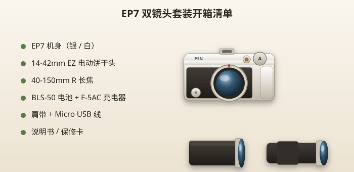
📷 建议图片：所有配件平铺在桌面上的俯拍，标注每个物品名称。
认识包装盒里的「三件套」
机身
EP7 是一台 Micro Four Thirds（M4/3） 无反相机。没有反光镜，比单反轻很多；没有内置取景器，所有构图都靠背后那块可翻转触摸屏。
14-42mm EZ
日常「挂机头」。非常薄，像块饼干，适合放包里随身带。变焦是电动的——转变焦环时镜头会伸长，关机后会自动缩回。
40-150mm R
轻量长焦。等效 80～300mm，拍远处的人、动物、舞台很有用。比 14-42 长一截，但放在包里不占太多地方。
第一步：给电池充电
- 打开机身底部电池仓盖
- 按指示方向插入 BLS-50 电池（缺角对准）
- 关上仓盖
- 关机状态下，用 USB 线连接相机与 F-5AC 充电器，插入插座
- 充电指示灯亮起；约 4 小时 充满后灯灭
⚠️ 注意
- 充电时相机必须关机，开机状态下不会充进电
- 也可另购 BCS-5 座充（约 3.5 小时充满），出门备用电池更方便
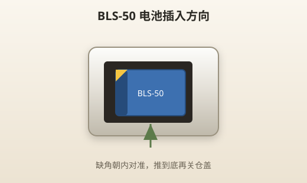
📷 建议图片：电池仓打开，标注电池正确插入方向。
第二步：插入 SD 存储卡
- 打开同一侧（底部或侧面）的 SD 卡槽
- 卡标签朝外，金手指朝内，推入至卡住
- 关好卡槽盖
| 推荐规格 |
说明 |
| 容量 |
64GB 或 128GB |
| 速度 |
UHS-I U3 或 UHS-II |
| 品牌 |
闪迪、三星、金士顿等主流即可 |
拍 4K 视频建议 U3 及以上。纯拍照，Class 10 也够用。
💡 小技巧：备一张备用卡。旅行时卡满了或损坏，有备无患。
第三步：安装 14-42mm EZ 镜头
第一次建议装 14-42，它是最常用的标准镜头。
操作步骤
1. 关闭相机电源（拨到 OFF）
2. 拆下机身卡口盖、镜头后盖——后盖收好别丢
3. 镜头卡口上的白点 对准 机身上白点
4. 镜头插入卡口，顺时针轻轻转动，听到「咔」一声即锁紧
5. 开机——EZ 镜头会自动伸出至工作位置
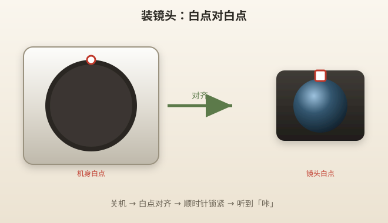
📷 建议图片：镜头与机身白点对齐的特写；或装镜头过程的连拍。
新手最容易犯的错
| 错误 |
后果 |
正确做法 |
| 开机状态下换镜头 |
传感器进灰风险大 |
先关机 |
| 白点没对齐硬拧 |
损坏卡口 |
对齐后再转 |
| 没听到锁紧声就开机 |
镜头可能掉落 |
确认「咔」一声 |
| 用手摸镜头前组玻璃 |
留下指纹油污 |
只握镜身 |
第四步：装肩带
肩带穿入机身上两个挂耳。建议用「从外向内」的穿法，防止肩带意外滑脱——具体可参考官方说明书肩带穿法图。
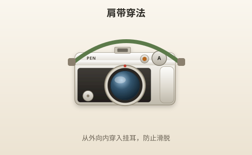
📷 建议图片：肩带正确穿法的特写。
第五步：第一次开机
- 模式转盘转到 iAUTO（全自动，通常标记为绿色相机图标）
- 电源拨杆拨到 ON
- 14-42 EZ 会轻微「嗡」一声伸出——这是正常的
- 按提示选择语言、日期时间
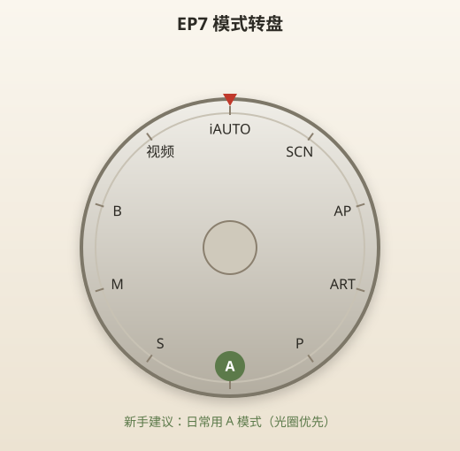
📷 建议图片：模式转盘指向 iAUTO；或开机后日期时间设置界面。
第六步：拍第一张测试照片
- 镜头对准房间里的静物（杯子、书本、玩偶）
- 屏幕轻触你想对焦的位置
- 半按快门——对焦框变绿表示合焦
- 完全按下快门
- 按 播放键（▶ 三角形）查看照片
检查这三件事
- [ ] 照片没有黑屏（镜头盖摘了吗？）
- [ ] 主体是清晰的（快门速度够快吗？）
- [ ] 亮度大致正常（太暗或太亮先别管，后面会学）
40-150mm 镜头先别急着装
长焦镜头留到熟悉 14-42 之后再装。你需要先练会：
机身各部位速览
[热靴/闪光灯]
[模式转盘] [电源开关]
┌─────────────────────┐
│ OLYMPUS PEN │ ← 正面：镜头、Profile 拨盘（左下）
│ [镜头] │
└─────────────────────┘
背面：3 英寸触摸屏（可上翻 80°、下翻 180° 自拍）
十字键、MENU、INFO、AEL/AFL、播放、删除
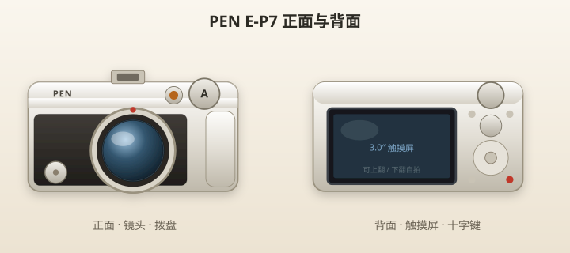
📷 建议图片：机身正、背两面产品照，标注主要区域。
实战 walkthrough：开箱到第一张照片（20 分钟）
跟着做一遍，全程不用查其他章节。每一步都有「做什么 + 看到什么才算对」。
阶段一：通电（约 5 分钟 + 充电等待）
步骤 1｜插电池
→ 底盖打开，BLS-50 缺角对准推到底，听到卡扣
→ 看到什么：盖子能轻松合上，不顶
步骤 2｜插 SD 卡
→ 标签朝外推入，听到「咔」
→ 看到什么：卡不外露、盖能关
步骤 3｜充电（关机）
→ USB 线接 F-5AC，插座通电
→ 看到什么：机身指示灯亮 = 正在充；灯灭 = 充满
✅ 检查点：若插上没反应 → 确认相机关机（开机不充电）、换个 USB 口。
阶段二：开机与基础引导（约 3 分钟）
步骤 4｜转到 iAUTO（绿色相机图标），电源拨到 ON
→ 看到什么：14-42 轻微「嗡」一声伸出，屏幕亮
步骤 5｜按屏幕提示选「简体中文」→ 设日期时间
→ 看到什么：进入实时取景画面，能看到镜头前的景象
✅ 检查点：屏幕全黑？→ 镜头盖没摘 / 镜头没伸出（重新开关机）。
阶段三：第一张照片（约 5 分钟）
步骤 6｜镜头对准桌上静物（杯子、书）
步骤 7｜手指点屏幕上的主体 → 出现对焦框
步骤 8｜半按快门 → 对焦框变绿 + 「滴」一声
步骤 9｜完全按下快门 → 屏幕闪一下 = 已拍
步骤 10｜按 ▶ 播放键 → 看到刚拍的照片
阶段四：三项验收
| 检查 |
合格标准 |
不合格怎么办 |
| 清晰 |
放大主体边缘锐利 |
快门太慢→靠窗更亮处再拍 |
| 曝光 |
不死黑不死白 |
太暗→靠窗；太亮→别对着窗 |
| 对焦 |
主体清背景可虚 |
框没变绿别按到底 |
🎯 毕业标准：能独立完成步骤 6～10，并拍出 1 张清晰照片，本章就通关了。
常见开箱问题速查
| 现象 |
原因 |
处理 |
| 开机镜头不伸出 |
镜头没锁紧 / 电量过低 |
重新锁镜头、先充电 |
| 屏幕提示「无存储卡」 |
卡没插到位 |
重插到「咔」 |
| 拍完没声音没反馈 |
静音模式 |
转 iAUTO 重试 |
| 时间不对 EXIF 乱 |
没设日期 |
MENU→扳手→日期时间 |
本章重点回顾
- 开箱确认：机身、两镜头、电池、充电器、肩带、SD 卡
- 充电必须关机，约 4 小时
- 装镜头：关机 → 白点对白点 → 顺时针锁紧 → 开机
- 第一次用 iAUTO 模式拍测试照
- 40-150 等熟悉后再装
常见误区
| 误区 |
真相 |
| 「镜头没伸出来就是坏了」 |
EZ 关机后会缩回，开机自动伸出 |
| 「充电时可以顺便开机看看」 |
开机时不会充电 |
| 「SD 卡随便插」 |
推到底卡住，别用蛮力 |
| 「两个镜头可以同时装」 |
一次只能装一支 |
拍摄练习
- 充电练习：插入电池，连接充电器，观察指示灯
- 装拆镜头 3 次：每次关机，练到 30 秒内完成
- iAUTO 拍 10 张：不同距离、不同光线
- 回放练习：播放、放大检查、删除 2 张最糊的
- 熟悉按键位置：闭着眼摸出快门、播放、删除键
完成以上练习后，进入 02-认识EP7.md。
认识 EP7
本章目标：知道 EP7 是什么、强在哪、弱在哪，以及它是否适合你。
EP7 是什么？
Olympus PEN E-P7（2021 年 6 月发布）是 OM System（原奥林巴斯）PEN 系列的一台 入门级无反相机。
几个关键特征：
| 特征 |
说明 |
| 传感器 |
2000 万像素 M4/3 Live MOS |
| 处理器 |
TruePic VIII |
| 防抖 |
5 轴机身防抖，约 4.5 档 |
| 屏幕 |
3 英寸触摸屏，104 万点，可翻转自拍 |
| 取景器 |
无（靠屏幕构图） |
| 重量 |
约 337g（含电池和卡） |
| 连拍 |
最高约 8.7 张/秒 |
| 视频 |
4K 30p |
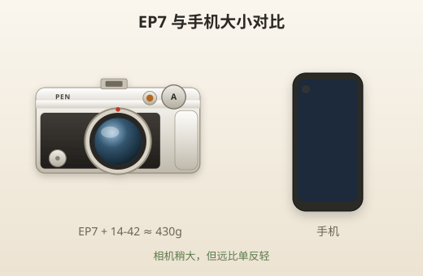
📷 建议图片：EP7 加 14-42 镜头与手机并排，展示体积。
为什么很多人喜欢 EP7？
1. 颜值即正义
复古 PEN 造型、金属质感、银白配色——很多人买它就是因为「好看」。愿意带出门的相机，才是好相机。
2. 真的轻
机身 + 14-42 EZ 大约 430g，比一罐可乐还轻。旅行、逛街挂脖子或放小包都不累赘。
3. 色彩直出好看
奥林巴斯/OM System 的 JPEG 色彩一向口碑不错。机内还有 色彩配置文件 和 16 种艺术滤镜，不想后期也能出片。
4. 防抖很强
5 轴防抖约 4.5 档，意味着你可以用更慢的快门手持拍摄。新手最怕手抖，EP7 帮你兜很大一部分底。
5. 镜头生态丰富
M4/3 卡口镜头选择多。你的 14-42 + 40-150 双套头已经覆盖 28～300mm 等效焦段，性价比极高。
Micro Four Thirds 是什么？
一句话：一种相机和镜头的「接头标准」。
全画幅传感器 ████████████████ （最大，景深最浅，机身往往最大）
APS-C 传感器 ██████████ （中等）
M4/3 传感器 ████████ （EP7 用这个，边长约 17×13mm）
手机传感器 ██ （最小）
等效焦段 ×2
M4/3 传感器比全画幅小，所以有一个「等效系数 2×」：
| 镜头标注 |
等效全画幅视角 |
| 14mm |
28mm（广角） |
| 42mm |
84mm（中焦） |
| 150mm |
300mm（长焦） |
你不需要背公式。记住：14-42 适合日常，40-150 适合「拉近远处的」。
对新手意味着什么？
| 优点 |
说明 |
| 机身镜头更小 |
愿意带出门 |
| 长焦更轻便 |
300mm 等效才 190g |
| 景深相对深 |
同光圈下背景不如全画幅虚——但人像仍够用 |
| 相对弱项 |
说明 |
| 高 ISO 噪点 |
比全画幅明显，但 ISO 3200 以内日常够用 |
| 极致背景虚化 |
需要 F1.8 大光圈定焦才更明显 |
| 暗光极限 |
有防抖补，但不如大传感器 |
EP7 的优点（结合你的套装）
| 优点 |
实际体验 |
| 轻便 |
双镜头放一个小包即可 |
| 防抖 |
室内、黄昏手持成功率更高 |
| 翻转屏 |
自拍、低角度、高角度都方便 |
| 触控对焦 |
和手机一样点哪对哪 |
| 艺术滤镜 |
直出创意照，免 App 滤镜 |
| USB 充电 |
充电宝也能给相机充 |
| 静音快门 |
博物馆、婚礼部分场景可用 |
EP7 的不足（买前/用前要知道）
| 不足 |
影响 |
应对方法 |
| 无取景器 |
大太阳下屏幕看不清 |
找阴影、戴帽子挡光、调高亮度 |
| 不防尘防滴 |
下雨、沙滩要小心 |
雨天套塑料袋；别换镜头 |
| 反差对焦 |
追焦不如高端机型 |
拍小孩宠物用连拍+提前量 |
| 4K 无机身防抖协同 |
拍视频手持会抖 |
用三脚架或裁切 1080p |
| 单卡槽 |
卡坏=数据全丢 |
重要行程备双卡、及时备份 |
| 菜单复杂 |
新手迷路 |
跟本教程「必改清单」走 |
⚠️ 诚实说：如果你主要拍高速运动（赛车、飞鸟）或专业商业人像，EP7 不是最优选。但旅行、记录生活、入门学摄影——非常合适。
适合什么人？
✅ 非常适合
- 从手机升级、想要更好画质但怕太重
- 旅行、街拍、美食、家人朋友记录
- 在意相机外观，愿意随身带
- 不想学复杂后期，希望直出好看
- 预算有限，双套头一机走天下
✅ 也可以，但有预期
- 夜景爱好者（能拍，但要学会控制 ISO）
- Vlog 入门（4K 可用，无麦克风接口是短板）
- 演唱会后排（40-150 能拍，但光圈小、高 ISO 有噪点）
不适合什么人？
❌ 可能不合适
- 强烈需要取景器（阳光户外的职业拍摄）
- 主要拍体育/野生动物高速追焦
- 追求极致暗光画质（经常 ISO 12800+）
- 需要双卡备份的专业商拍
- 重度视频创作（无耳机麦接口、4K 裁切大）
EP7 vs 手机：差在哪？
| 对比项 |
手机 |
EP7 + 镜头 |
| 传感器 |
小 |
大很多 |
| 光学变焦 |
多数靠数码裁切 |
40-150 真光学 300mm |
| 背景虚化 |
算法模拟，边缘易穿帮 |
物理光学，更自然 |
| 暗光 |
计算摄影很强 |
靠大传感器+防抖，各有胜负 |
| 操控 |
极简 |
需学习，但更可控 |
| 便携 |
口袋 |
小包 |
新手常见失望：「为什么不如手机亮？」—— 因为手机默认 HDR+算法，相机默认更「真实」。学会曝光补偿和后期，差距就拉开了。
你的双镜头套装能拍什么？
| 场景 |
14-42 EZ |
40-150 R |
| 餐厅美食 |
⭐⭐⭐ |
❌ 太近 |
| 旅行合影 |
⭐⭐⭐ |
⭐ |
| 远处建筑 |
⭐ |
⭐⭐⭐ |
| 动物园 |
⭐ |
⭐⭐⭐ |
| 儿童室内 |
⭐⭐⭐ |
⭐ |
| 演唱会 |
❌ |
⭐⭐ |
| 月亮 |
❌ |
⭐（需三脚架） |
| 人像半身 |
⭐⭐⭐ |
⭐⭐ |
详细镜头章节见 05-14-42EZ镜头.md 和 06-40-150R镜头.md。
品牌更名说明
2021 年起影像部门品牌逐步改为 OM SYSTEM。你的 EP7 机身上可能仍印 OLYMPUS PEN，菜单里也可能是 OLYMPUS——功能完全相同，固件更新从 OM System 官网下载即可。
实战 walkthrough：用 3 个实拍案例读懂 EP7 的强项
与其背参数，不如各拍一张，直观感受相机比手机强在哪。三个案例都用 A 模式（下一章详解，这里照抄参数即可）。
案例 A：真实光学虚化（手机算法比不了的边缘）
镜头：14-42 @ 42mm
模式：A，光圈 F5.6
主体：一个杯子/玩偶，放桌子边缘
背景：离主体 1.5m 以上（越远越虚）
动作：靠近主体到 0.5m，对焦主体
对比：同场景用手机「人像模式」拍一张。放大看主体边缘（头发、把手）——手机算法常在边缘穿帮，EP7 是光学虚化，过渡自然。
案例 B：光学长焦（把远处拉到眼前）
镜头：换 40-150 @ 150mm（等效 300mm）
模式：A，F5.6
主体：50m 外的招牌 / 对岸建筑
动作：站稳，半按对焦，快门≥1/250
对比：手机同一位置拉到最大。手机多为数码裁切，放大就糊；EP7 是真光学，细节清楚得多。
案例 C：防抖暗光手持（不糊的极限）
镜头：14-42 @ 14mm，F3.5
模式：A，ISO AUTO（上限 3200）
场景：室内较暗的角落
动作：双手夹紧、屏息，轻按快门
感受：EP7 的 5 轴防抖让 1/10～1/20 秒手持也常能出清晰片——这是它「愿意带出门也能拍」的底气。
三案例对照
| 案例 |
关键设置 |
你会明白 |
| A 虚化 |
42mm + F5.6 + 靠近 |
光学虚化更自然 |
| B 长焦 |
40-150 @ 150mm |
光学变焦碾压手机数码变焦 |
| C 防抖 |
14mm + ISO AUTO |
暗光手持成功率 |
🎯 目的：不是拍大片，是亲手验证「为什么要用相机而不是手机」。拍完你就知道该在什么场景掏出 EP7。
本章重点回顾
- EP7 = 轻便、好看、防抖强的 M4/3 入门无反
- 无取景器是最大的使用环境限制
- M4/3 等效焦段 ×2，你的套装覆盖 28～300mm
- 适合旅行、生活记录；不适合专业体育/极致暗光
- 比手机强在光学变焦、真实虚化、可控性
常见误区
| 误区 |
真相 |
| 「像素越高越好」 |
2000 万对打印 A3 足够 |
| 「小传感器就是垃圾」 |
轻便+防抖+镜头，整体体验很好 |
| 「必须买定焦才专业」 |
双套头先把焦段用熟 |
| 「EP7 是老相机了」 |
2021 年发布，仍是最新 PEN 线 |
拍摄练习
- 称一下你的 EP7+14-42 重量，和手机对比
- 在强光下看屏幕，感受「无取景器」的实际影响
- 打开艺术滤镜拍 3 张，体验直出色彩
- 列出你最常拍的 5 种场景，对照上表看该用哪支镜头
下一章：03-第一次开机设置.md
第一次开机设置
本章目标：完成 10 项「开机必做」设置，让 EP7 处于最适合新手的状态。
开始之前
- 电池已充满或至少有 50% 电量
- SD 卡已插入
- 14-42 EZ 已安装
- 模式转盘在 P 或 A（设置菜单时比 iAUTO 自由）
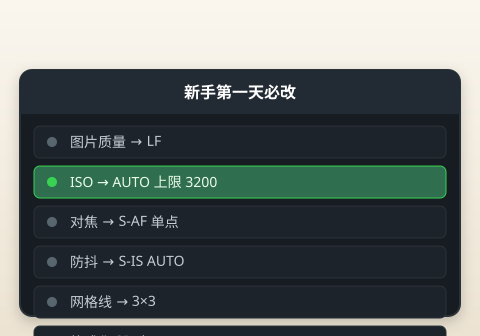
📷 建议图片：设置菜单首页截图，或本教程设置清单打印版。
必做设置清单（10 项）
| 序号 |
设置项 |
推荐值 |
优先级 |
| 1 |
日期与时间 |
准确 |
⭐⭐⭐ |
| 2 |
图片质量 |
LF（大 JPEG） |
⭐⭐⭐ |
| 3 |
ISO 上限 |
AUTO，最高 3200 |
⭐⭐⭐ |
| 4 |
防抖 |
开启 S-IS AUTO |
⭐⭐⭐ |
| 5 |
对焦模式 |
S-AF 单次对焦 |
⭐⭐⭐ |
| 6 |
对焦点 |
单点，可触控 |
⭐⭐⭐ |
| 7 |
白平衡 |
AUTO |
⭐⭐ |
| 8 |
网格线 |
开启 |
⭐⭐ |
| 9 |
格式化 SD 卡 |
新卡必做 |
⭐⭐⭐ |
| 10 |
固件版本 |
检查更新 |
⭐ |
下面逐项说明为什么要这样设。
1. 日期与时间
路径：MENU → 扳手图标（设置）→ 日期/时间
照片 EXIF 信息依赖正确时间。旅行跨时区记得改。
💡 小技巧：开启「保留日期」——换电池时时间不会乱。
2. 图片质量：LF
路径：MENU → 相机图标 → 图片质量 → LF
| 选项 |
含义 |
新手建议 |
| LF |
大 JPEG，约 20MP |
✅ 默认用这个 |
| LN |
标准 JPEG，稍小 |
卡空间紧张时 |
| RAW |
原始数据 |
第一个月先别用 |
| RAW+JPEG |
两种都存 |
占空间，以后再说 |
为什么不用 RAW？
RAW 需要电脑软件后期。你现在的目标是拍清楚、直出好看。等 JPEG 玩熟了再学 RAW。
⚠️ 注意：LF 单张约 8～10MB，64GB 卡可拍 6000+ 张，放心用。
3. ISO：AUTO，上限 3200
路径：按 OK 键 → 超级控制面板（SCP）→ ISO → AUTO
或：MENU → 拍摄菜单 → ISO → AUTO
| 设置 |
推荐 |
| ISO 模式 |
AUTO |
| AUTO 上限 |
3200（默认可能 6400，建议改低） |
| AUTO 下限 |
LOW（约 ISO 100） |
为什么限制 3200？
ISO 越高，噪点越多。EP7 在 ISO 3200 以内日常完全可用；6400 以上明显变脏。限制上限 = 相机帮你兜底。
什么时候手动提高？
室内极暗、演唱会——临时改 ISO 1600～6400，拍完改回 AUTO。
4. 防抖：开启
路径：MENU → 拍摄 → 防抖 / IS Settings → S-IS AUTO
EP7 的 5 轴防抖是核心优势。不要关。
| 模式 |
说明 |
| S-IS AUTO |
自动，日常用这个 |
| IS 1 |
仅横抖 |
| IS 2 |
仅竖抖 |
| OFF |
关——仅三脚架长曝光时用 |
5. 对焦：S-AF 单次对焦
路径：SCP（按 OK）→ 对焦模式 → S-AF
| 模式 |
何时用 |
| S-AF |
静物、人像、风景——90% 时间 |
| C-AF |
跑步的小孩、宠物——第二周再学 |
| MF |
手动对焦——高级，以后学 |
| S-AF+MF |
半自动——以后学 |
新手用 S-AF：半按快门对焦一次，全按拍摄。简单可靠。
6. 对焦点：单点 + 触摸
路径：SCP → AF 区域 → 单点 或 小群点
- 触摸屏点哪对哪——和手机一样
- 半按快门时可配合十字键移动对焦点
💡 小技巧：人像对焦在眼睛，不要对鼻子或背景。
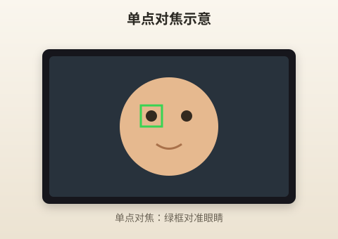
📷 建议图片：屏幕上的单点对焦框对准人脸眼睛的截图。
7. 白平衡：AUTO
路径：SCP → WB → AUTO
让相机自动判断色温。90% 场景够用。
| 场景 |
是否改 WB |
| 日常 |
AUTO |
| 餐厅暖光灯 |
AUTO 或 白炽灯 |
| 阴天 |
AUTO 即可 |
| RAW 拍摄者 |
固定 AUTO，后期改 |
第一个月：别碰自定义白平衡。
8. 网格线：开启
路径：MENU → 自定义 → 网格线 → 3×3
帮助构图（三分法）。不影响成像，只在屏幕显示。
9. 格式化 SD 卡
路径：MENU → 扳手 → 格式化
⚠️ 会删除卡上所有照片。新卡或二手卡第一次使用必做。
区别：
- 删除全部照片：文件可能残留
- 格式化：彻底清空，推荐
10. 检查固件
路径：MENU → 扳手 → 固件 → 显示版本
访问 OM System 支持页面 对比是否有新版本。有更新再升，没有就跳过。
推荐但非必做（第二周再改）
| 设置 |
推荐值 |
说明 |
| 静音模式 |
关 |
需要时再用 SCN Silent |
| 长按 AF 取消 |
默认 |
先不动 |
| 按钮自定义 |
默认 |
熟悉后再改 Fn |
| Wi-Fi |
按需 |
传手机时再开 |
| 人脸检测 |
开 |
拍人像有帮助 |
| 防闪烁 |
AUTO |
室内荧光灯防条纹 |
超级控制面板（SCP）——你的「快捷菜单」
在 P/A/S/M 模式下，按 OK 键 调出 SCP：
┌─────────────────┐
│ ISO WB 测光 │
│ 模式 AF区 驱动 │
│ 闪光 防抖 ... │
└─────────────────┘
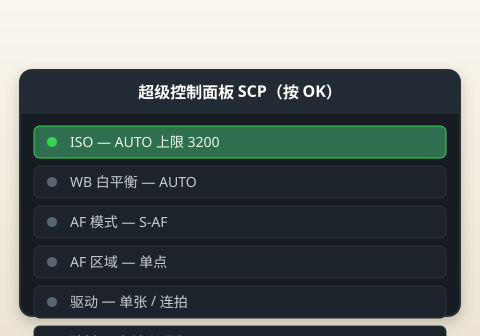
📷 建议图片：SCP 完整界面截图，标注常用图标。
新手最常碰的 5 个：
- ISO
- 白平衡（WB）
- 对焦模式
- AF 区域
- 连拍/自拍定时
用十字键移动，OK 确认，前拨轮或子拨盘改数值。
设置完成后的「标准状态」
模式：A（光圈优先）——下一章详讲
光圈：F4（14-42 中间档）
ISO：AUTO（上限 3200）
WB：AUTO
画质：LF
对焦：S-AF，单点
防抖：S-IS AUTO
网格：3×3 开
拍一张测试照，回放检查：
- [ ] 文件名连续、时间正确
- [ ] 照片清晰
- [ ] 亮度正常
实战 walkthrough：SCP 30 秒改齐 4 项（每天出门前）
超级控制面板（SCP）是你日常最该练熟的操作。目标：闭着也能在 30 秒内把 ISO、WB、AF 模式、AF 区域改对。
步骤 1｜确保在 P/A/S/M 模式（iAUTO 下 SCP 受限）
步骤 2｜按 OK 键 → 屏幕出现方格面板（SCP）
步骤 3｜十字键移动高亮框到目标项，转拨轮改值：
· ISO → AUTO
· WB → AUTO
· AF 模式 → S-AF
· AF 区域 → 单点
步骤 4｜半按快门退出，设置立即生效
✅ 检查点：改完随手拍一张，回放按 INFO 看参数是否是你设的值。
🎯 练习目标：连续 3 天，每天出门前盲操一遍，直到不看菜单也能改。
两套「即用预设」（抄参数就能拍）
刚学不用自己想参数，先用这两套覆盖 90% 场景。
预设 A · 白天通用
模式：A 光圈：F5.6
ISO：AUTO(≤3200) WB：AUTO
对焦：S-AF 单点 画质：LF
曝光补偿：0（偏暗+0.3）
适合：街拍、合影、旅行、静物。
预设 B · 室内 / 弱光
模式：A 光圈：F3.5～F4（开大进光）
ISO：AUTO(≤3200) WB：AUTO
对焦：S-AF 单点 画质：LF
曝光补偿：+0.3 防抖：S-IS AUTO（务必开）
适合：餐厅、家里、咖啡馆、黄昏。
💡 从预设 A 起步；发现快门低于 1/60 容易糊，就切到预设 B（开大光圈）。
分步：新卡第一次「格式化」（会清空，务必确认）
步骤 1｜MENU → 扳手图标 → 格式化
步骤 2｜选「全部删除 / 格式化」→ 确认
步骤 3｜等待完成，回到拍摄
⚠️ 格式化清空全部照片。只对新卡或已备份的卡做。
本章重点回顾
- 新卡必须格式化
- 画质用 LF JPEG，第一个月不用 RAW
- ISO AUTO 上限 3200 控噪点
- 防抖常开，S-IS AUTO
- 对焦 S-AF + 单点 + 触摸
- OK 键 = SCP 快捷菜单，比深逛 MENU 高效
常见误区
| 误区 |
真相 |
| 「画质选最高 RAW」 |
新手先 JPEG，学后期再 RAW |
| 「ISO 越低越好所以锁 200」 |
暗光会糊，AUTO 更聪明 |
| 「防抖耗电就关」 |
关防抖糊片率大增 |
| 「设置一次永远不用改」 |
特殊场景要临时调整 |
拍摄练习
- 按清单完成 10 项设置，勾选 checkbox
- 按 OK 打开 SCP，找到 ISO、WB、AF 三项
- 用 A 模式 + 上述设置拍 10 张室内照
- 故意把 ISO 上限改成 12800 拍一张，对比 3200 的噪点（然后改回 3200）
- 打开网格线，用三分法构图拍 3 张
下一章：04-模式转盘.md —— 最重要的章节之一。
模式转盘详解
本章目标：搞懂 EP7 模式转盘上每一个档位，知道什么时候用哪个。
模式转盘长什么样？
EP7 模式转盘在机身右上方（快门附近），共 10 个档位：
[热靴]
┌─── iAUTO ───┐
SCN ─┤ ├─ AP
ART ─┤ 模式转盘 ├─ P
│ │
视频 ─┤ ├─ A
B ─┤ ├─ S
└─── M ─────────┘
📷 建议图片：模式转盘俯拍，每个档位清晰可见并标注名称。
新手推荐优先级
| 模式 |
推荐指数 |
第一周 |
第一个月 |
| A 光圈优先 |
⭐⭐⭐⭐⭐ |
✅ 主力 |
✅ 主力 |
| iAUTO 全自动 |
⭐⭐⭐⭐ |
✅ 过渡 |
少用 |
| SCN 场景 |
⭐⭐⭐⭐ |
✅ 特定场景 |
✅ |
| P 程序自动 |
⭐⭐⭐ |
了解即可 |
备用 |
| ART 艺术滤镜 |
⭐⭐⭐ |
玩创意 |
✅ |
| S 快门优先 |
⭐⭐ |
先不碰 |
运动场景 |
| AP 高级拍摄 |
⭐⭐ |
先不碰 |
烟花/光轨 |
| M 全手动 |
⭐ |
先不碰 |
进阶 |
| B B门/长曝光 |
⭐ |
先不碰 |
配合夜景章 |
| 视频 |
⭐⭐ |
按需 |
按需 |
一句话建议：第一个月把 A 模式 用熟，比学遍所有模式更有用。
iAUTO（全自动）
是什么？
相机替你做所有决定：光圈、快门、ISO、是否闪光——像手机「自动模式」。
工作原理
测光 → 识别场景 → 自动组合参数 → 你只管按快门。
EP7 的 iAUTO 还有 Live Guide（实时指引），可以用滑动条调整「背景虚化」「亮度」「色温」——比纯自动友好。
推荐指数：⭐⭐⭐⭐（入门第一天）
| 优点 |
缺点 |
| 零思考，出片率高 |
很多参数改不了 |
| Live Guide 直观 |
学不到曝光逻辑 |
| 适合给家人随手拍 |
复杂光线可能误判 |
推荐场景
- 第一天试机
- 把相机交给完全不会用的朋友
- 来不及设置的抓拍瞬间
推荐参数
无需设置——全自动。
常见错误
| 错误 |
后果 |
| 长期只用 iAUTO |
永远学不会 A 模式 |
| 暗光强制闪光 |
人脸油亮、背景黑——可改 Live Guide 降闪光 influence |
| 大太阳下看不清屏幕还硬拍 |
构图不准 |
实拍案例
家庭聚餐：iAUTO + Live Guide 把「背景虚化」滑一点 → 拍餐桌菜和人，成功率最高。
何时毕业离开 iAUTO？ 当你能独立用 A 模式拍 50 张满意照片时。
P（程序自动）
是什么？
相机选光圈+快门组合，但你可以换组合（程序线），也能调 ISO、曝光补偿。
工作原理
相机给出「均衡」的曝光组合；转前拨轮可切换同等曝光的不同快门/光圈配搭。
推荐指数：⭐⭐⭐
| 优点 |
缺点 |
| 比 iAUTO 自由 |
不如 A 模式直观 |
| 不用管光圈快门 |
新手仍不知背景虚实谁控制 |
| 适合快速抓拍 |
和 A 模式功能重叠 |
推荐场景
- 你已经会 A 模式，想少操心一点
- 街头快拍，来不及想光圈
推荐参数
ISO：AUTO（上限 3200）
曝光补偿：0
常见错误
| 错误 |
说明 |
| 以为 P = 专业 |
P = Program，不是 Professional |
| 和 A 模式混用没区别 |
人像用 A 更可控 |
实拍案例
逛街随手拍 storefront：P 模式，走哪拍哪，曝光补偿 +0.3 让画面稍亮。
新手建议：知道 P 存在即可，主力仍用 A。
A（光圈优先）—— 新手最该用的模式
是什么？
你定光圈，相机自动算快门。
工作原理
你选 F 值 → 相机测光 → 自动匹配快门速度 → 正确曝光
光圈越小（F 数字越大）→ 进光少 → 快门越慢 → 背景更清晰
光圈越大（F 数字越小）→ 进光多 → 快门越快 → 背景更虚化
推荐指数：⭐⭐⭐⭐⭐
| 优点 |
缺点 |
| 直接控制背景虚化 |
极暗时光圈最大仍可能慢快门 |
| 相机帮你算快门 |
大光圈+长焦仍可能虚焦浅 |
| 专业摄影师日常模式 |
需要理解 F 值含义 |
推荐场景
几乎所有日常拍摄：人像、美食、旅行、静物、街拍。
推荐参数
| 镜头 |
光圈 |
ISO |
说明 |
| 14-42 @ 14mm |
F3.5～F5.6 |
AUTO |
风景、环境人像 |
| 14-42 @ 25mm |
F4～F5.6 |
AUTO |
美食、半身人像 |
| 14-42 @ 42mm |
F5.6 |
AUTO |
轻度压缩人像 |
| 40-150 @ 150mm |
F5.6 |
AUTO～1600 |
远景、动物园 |
怎么调光圈？ A 模式下转后拨轮（拇指下方小拨轮）。
常见错误
| 错误 |
后果 |
解决 |
| F 值越大越「高级」 |
F11 室内快门太慢糊片 |
室内 F4～5.6 |
| 一直 F3.5 |
景深太浅，对焦不准就糊 |
多人合影 F5.6+ |
| 不看快门速度 |
1/10 秒手持必糊 |
低于 1/60 提高 ISO 或开大光圈 |
| 背景不虚就怪相机 |
套头+F5.6+离主体远 |
靠近主体、拉长焦段 |
实拍案例
| 场景 |
设置 |
| 咖啡馆人像 |
A, F4, ISO AUTO, 42mm 端 |
| 餐桌美食 |
A, F5.6, 俯拍, 14mm |
| 旅行合影 |
A, F5.6～F8, 14mm, 对焦中间人 |
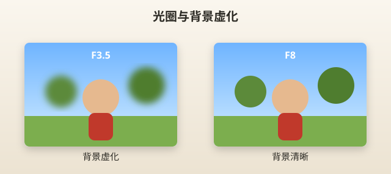
📷 建议图片：同一场景 F3.5 vs F8 背景虚化对比（各一张）。
S（快门优先）
是什么？
你定快门速度，相机自动算光圈。
工作原理
你选 1/500 → 相机自动选 F 值 → 曝光正确
推荐指数：⭐⭐（第一个月后）
| 优点 |
缺点 |
| 凝固运动 |
新手不直观 |
| 拍流水可慢门 |
光圈可能到极限仍过曝/欠曝 |
推荐场景
- 跑步、踢球（1/500～1/1000）
- 瀑布丝滑（1/4～1/15 + 三脚架）
- 车辆 Panning（SCN 也有）
推荐参数
| 场景 |
快门 |
| 走路的人 |
1/125 |
| 跑步/宠物 |
1/500 |
| 体育运动 |
1/1000 |
| 手持安全下限 |
≥ 1/焦距等效（如 150mm → 1/300） |
怎么调？ S 模式下转前拨轮（快门环）。
常见错误
| 错误 |
后果 |
| 室内 S 模式 1/1000 |
光圈开最大仍欠曝 |
| 快门太慢 |
运动模糊 |
实拍案例
小孩在公园跑：S, 1/640, ISO AUTO, 14-42 @ 25mm, C-AF 连拍。
M（全手动）
是什么？
光圈、快门、ISO 全部你说了算。相机只显示曝光指示（欠曝/过曝）。
推荐指数：⭐（进阶）
| 优点 |
缺点 |
| 完全控制 |
学习曲线陡 |
| 棚拍、闪光灯 |
新手极易拍废 |
| 理解曝光原理 |
速度慢 |
推荐场景
- 使用外接闪光灯
- 固定参数拍延时序列
- 你已经完全理解曝光三要素
推荐参数
第一个月：不要用 M 模式。用 A 模式 + 曝光补偿达到 90% 效果。
常见错误
| 错误 |
说明 |
| 「专业就必须 M」 |
很多专业摄影师日常用 A |
| 忘记看曝光指示 |
全黑或全白 |
EP7 的 M 模式便利之处
双拨轮：一个调快门，一个调光圈——比很多相机友好。
SCN（场景模式）
是什么？
22 种预设场景，相机自动优化参数。分两级选择：
第一级（大类） → 第二级（具体场景）
| 大类 |
包含场景 |
| 人物 |
人像、e-人像、人像+风景、人像+夜景、儿童 |
| 夜景 |
夜景、人像+夜景、手持星空、烟花、光轨 |
| 运动 |
运动、儿童、平移 |
| 风景 |
风景、日落、海滩&雪景、全景、逆光 HDR |
| 室内 |
烛光、静音、人像、逆光 HDR |
| 特写 |
微距、自然微距、文档、多焦点拍摄 |
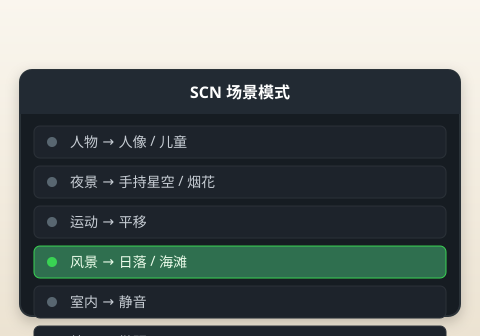
📷 建议图片：SCN 模式两级选择菜单截图。
推荐指数：⭐⭐⭐⭐
| 优点 |
缺点 |
| 针对性优化 |
参数不透明 |
| 手持星空等「一键」 |
不如 A 模式灵活 |
| 新手成功率极高 |
依赖场景选对 |
最实用的 5 个 SCN
| 场景 |
何时用 |
| 人像 |
比 iAUTO 肤色更好 |
| 风景 |
旅行远景，饱和稍增 |
| 儿童 |
对焦+快门偏向凝固 |
| 手持星空 |
星空入门（配合三脚架更好） |
| 静音 |
博物馆、演出 |
推荐参数
选 SCN 后一般无需再调。可微调曝光补偿。
常见错误
| 错误 |
后果 |
| 场景选错 |
运动模式拍静物——快门太快浪费 |
| 手持星空不用三脚架 |
仍可能糊 |
| 所有情况都用 SCN |
学不到 A 模式 |
实拍案例
日落海滩：SCN → 风景 → 日落，曝光补偿 -0.3 防止太阳过曝。
ART（艺术滤镜）
是什么？
16 种机内滤镜，拍摄时实时预览，直出创意效果。
| 滤镜 |
风格 |
| 流行艺术 |
高饱和 |
| 柔焦 |
梦幻朦胧 |
| 颗粒胶片 |
复古 |
| 针孔 |
暗角 LOFI |
| 戏剧 tone |
高反差黑白 |
| 部分色彩 |
留一色其余黑白 |
| … |
共 16 种 |
推荐指数：⭐⭐⭐（玩创意）
| 优点 |
缺点 |
| 免后期 |
不可 RAW 回退（JPEG 滤镜） |
| 社交直出 |
容易「滤镜感」过重 |
| 可 Fine Tune 强度 |
拍错无法撤销风格 |
推荐场景
- 街拍复古风
- 旅行纪念「有风格」的照片
- Instagram 直发
推荐参数
选滤镜 → 屏幕上下滑调整强度 → 建议 50%～70%，别拉满。
常见错误
| 错误 |
说明 |
| 重要场合全开 ART |
无法恢复普通色彩 |
| 强度 100% |
假、腻 |
实拍案例
老城区街拍：ART → 颗粒胶片，强度 60%，14-42 @ 17mm。
AP（高级拍摄模式）
是什么？
把高级功能集中到模式转盘，不用深逛菜单：
| AP 子模式 |
用途 |
| Live Composite |
烟花、光轨、星轨叠加 |
| Live Time |
实时看长曝光效果 |
| 多重曝光 |
两次曝光合成一张 |
| HDR |
高动态范围 |
| 静音 |
电子快门无声 |
| 全景 |
横向接片 |
| 梯形校正 |
拍建筑防倒 |
| AE 包围 |
连拍不同曝光 |
| 对焦包围 |
微距景深合成 |
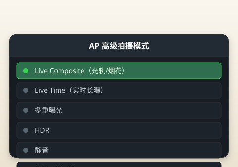
📷 建议图片：AP 模式列表截图。
推荐指数：⭐⭐（第二个月）
| 优点 |
缺点 |
| 烟花/光轨神器 |
学习成本 |
| Live Composite 可预览 |
设置步骤多 |
推荐场景
- Live Composite：烟花、光绘
- 全景：大场景
- 静音：需要绝对安静的场合
常见错误
| 错误 |
后果 |
| 不读说明直接用 Live Composite |
全黑或全白 |
| 手持 Live Time 长曝光 |
糊 |
第一个月：知道 AP 存在，夜景章节再学 Live Composite。
B（B 门 / 时间 / Live Composite）
是什么？
B 模式包含三种长曝光：
| 子模式 |
操作 |
| BULB |
按住快门多久，曝光多久 |
| TIME |
按一次开始，再按一次结束 |
| LIVE COMP |
累积光轨，背景亮度不变 |
推荐指数：⭐（配合三脚架）
详见 10-夜景.md。
视频模式
是什么？
模式转盘转到摄像机图标，拍摄 MOV 视频。
| 子模式 |
规格 |
| 4K |
3840×2160, 30/25/24p |
| 标准 |
1080p 多种帧率 |
| 高速 |
慢动作（无声音） |
新手建议
- 日常 1080p 60fps 足够
- 4K 裁切大、文件大
- 无麦克风接口——环境声收录有限
模式对照速查表
| 我想… |
用哪个模式 |
| 完全不想动脑 |
iAUTO |
| 日常 90% 拍摄 |
A |
| 拍跑步的人 |
S 或 SCN 运动 |
| 拍日落 |
SCN 日落 或 A |
| 创意直出 |
ART |
| 烟花 |
AP → Live Composite |
| 学曝光原理 |
M（进阶） |
| 录 Vlog |
视频 → 1080p |
实战 walkthrough：A 模式「光圈三连」分步练习（15 分钟）
这是全书最重要的一次练习——用同一主体、只改光圈，亲眼看懂 A 模式在控制什么。
准备
主体：一个立体小物（玩偶、瓶子），放桌面
背景：身后 1.5m 有杂物（书架、窗）
镜头：14-42 @ 42mm（长端虚化最明显）
模式：A ISO：AUTO 对焦：单点对主体
距离：靠近主体约 0.5m
分步拍摄
第 1 张｜后拨轮把光圈转到 F3.5（最大）
→ 拍摄 → 回放放大看背景
第 2 张｜光圈转到 F5.6
→ 同机位同构图再拍
第 3 张｜光圈转到 F8
→ 再拍一张
观察与结论
| 光圈 |
背景 |
相机自动给的快门（大概） |
| F3.5 |
最虚 |
较快 |
| F5.6 |
中等 |
中 |
| F8 |
较清晰 |
较慢 |
🔑 你会明白：光圈越大（F 数越小）→ 背景越虚、快门越快。这就是 A 模式给你的唯一但最有用的控制权。
进阶：加一次「快门观察」
回放每张按 INFO 看快门速度，记录下来。你会发现：F 变大 → 快门变慢。当快门低于 1/60，就要警惕手抖糊片（开大光圈或提 ISO）。
场景 → 模式速选（分步决策）
拿起相机先问自己三句话：
1) 要不要控制背景虚化？ 要 → A 模式
2) 主体在快速移动吗？ 是 → S 模式 或 SCN 运动
3) 完全没时间想？ 是 → iAUTO
| 场景 |
首选 |
关键参数 |
| 咖啡馆人像 |
A |
42mm F4，对眼睛 |
| 跑动小孩 |
S / SCN儿童 |
1/500，连拍 |
| 日落 |
SCN日落 / A |
F8，-0.3EV |
| 烟花 |
AP LiveComp |
F8 ISO200 三脚架 |
| 随手抓拍 |
iAUTO |
无 |
本章重点回顾
- A 模式是新手最好的朋友：你控光圈，相机控快门
- iAUTO 和 SCN 帮你过渡，但别一直停留
- ART 玩创意，重要场合用普通模式
- AP / B / M 是第二个月的内容
- 后拨轮（A 模式）= 光圈；前拨轮（S 模式）= 快门
常见误区
| 误区 |
真相 |
| 模式越多越好要全试 |
精通 A 比浅尝辄止强 |
| SCN 比 A 专业 |
SCN 是自动 preset，A 更可控 |
| M 模式才专业 |
A 是专业摄影师最常用模式之一 |
| 艺术滤镜可以后期加 |
有，但机内实时预览更好玩 |
拍摄练习
- 同一主体用 4 种模式拍：iAUTO、A(F5.6)、SCN人像、ART 颗粒胶片——对比
- A 模式光圈练习：F3.5 / F5.6 / F8 各拍 5 张，观察背景变化
- SCN 打卡：人像、风景、儿童各 5 张
- 记录快门速度：A 模式下拍 10 张，回放看 EXIF 快门，理解相机如何自动匹配
- 毕业测试：连续 30 张全部用 A 模式，至少 25 张满意
下一章：05-14-42EZ镜头.md
14-42mm EZ 镜头使用指南
本章目标：把「挂机饼干头」用熟——知道每个焦段拍什么、怎么拍成功率最高。
镜头一览
| 项目 |
规格 |
| 全称 |
M.Zuiko Digital ED 14-42mm F3.5-5.6 EZ |
| 类型 |
电动变焦标准变焦（Pancake 饼干） |
| 焦段 |
14～42mm |
| 等效焦段 |
28～84mm（×2） |
| 最大光圈 |
F3.5（广角端）～ F5.6（长端） |
| 最近对焦 |
0.2m（20 厘米） |
| 重量 |
约 93g |
| 滤镜口径 |
37mm |
| 特点 |
电动伸缩、关机自动收回、静音 AF |
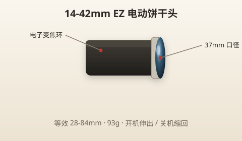
📷 建议图片：镜头伸出和收回两种状态对比；标注变焦环位置。
等效焦段速查
M4/3 乘 2，对应手机/全画幅习惯的视角：
| 变焦位置 |
实际 mm |
等效 mm |
视角感受 |
手机类比 |
| 最广 |
14 |
28 |
广角，容纳环境 |
手机 0.5x～1x |
| 中间 |
25 |
50 |
标准，接近人眼 |
手机 1x |
| 最长 |
42 |
84 |
中焦，轻度压缩 |
手机 2x 左右 |
14mm ────────── 25mm ────────── 42mm
广 标准 中焦
风景 日常 人像半身
建筑 美食 细节
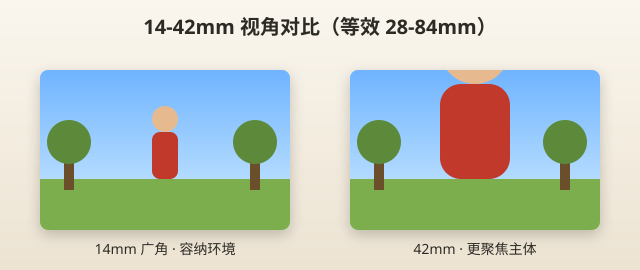
📷 建议图片：同一位置 14mm / 25mm / 42mm 三张对比图。
电动变焦：和别的镜头不一样
14-42 EZ 的变焦环是电子的：
| 行为 |
说明 |
| 开机 |
镜头自动伸出至工作位置，轻微马达声 |
| 关机 |
镜头自动收回，变扁便于携带 |
| 变焦 |
转变焦环，匀速电子变焦，不是机械阻尼 |
⚠️ 注意
- 关机后镜头缩回——不是故障
- 变焦时不要用手堵镜头伸缩
- 没有「变焦锁定」键，放包里已收回即可
💡 小技巧：拍视频时电动变焦非常顺滑，比手动拧更稳。
最佳光圈与锐度
| 焦段 |
最佳画质光圈 |
日常推荐 |
虚化能力 |
| 14mm |
F5.6～F8 |
F5.6 |
弱（广角+小光圈） |
| 25mm |
F4～F5.6 |
F4～F5.6 |
中等 |
| 42mm |
F5.6 |
F5.6 |
套头里最好 |
锐度：中心 F5.6～F8 最锐；F3.5 广角端也够用，别迷信「必须 F8」。
虚化：套头+ M4/3 别期待「刀锐奶化」。要明显虚化：42mm 端 + F5.6 + 主体离背景远 + 靠近主体。
适合拍什么？
| 场景 |
推荐焦段 |
模式 |
光圈 |
说明 |
| 旅行合影 |
14～17mm |
A |
F5.6～F8 |
容纳多人+背景 |
| 街拍 |
17～25mm |
A |
F5.6 |
标准视角，低调 |
| 美食 |
14～25mm |
A |
F5.6 |
0.2m 近摄够俯拍 |
| 咖啡店内景 |
14mm |
A |
F4 |
空间小要广角 |
| 半身人像 |
35～42mm |
A / SCN人像 |
F4～F5.6 |
对焦眼睛 |
| 建筑外观 |
14mm |
A |
F8 |
注意垂直线条 |
| 桌面静物 |
25～42mm |
A |
F5.6 |
三脚架或高 ISO |
| Vlog 自拍 |
14mm |
视频 |
F5.6 |
翻转屏+广角 |
不适合拍什么？
| 场景 |
为什么 |
怎么办 |
| 远处动物/舞台 |
42mm 等效 84mm 不够远 |
换 40-150 |
| 演唱会后排 |
同上 |
换 40-150 |
| 月亮特写 |
84mm 等效太小 |
40-150 @ 150 + 三脚架 |
| 极致背景虚化 |
F5.6 套头限制 |
接受或日后买 F1.8 定焦 |
| 快速运动远距离 |
焦段不够 |
换 40-150 |
| 暗光无防抖场景 |
光圈最大 F3.5 |
靠 EP7 机身防抖；开 ISO |
与 40-150 的搭配策略
出门默认：14-42 装在机身上
需要「拉近」时：找地方关机换 40-150
| 一天行程示例 |
镜头选择 |
| 城市逛街+咖啡馆 |
只带 14-42 |
| 动物园 |
14-42 进门，换 40-150 进园区 |
| 旅行混合 |
14-42 挂机，40-150 放包侧袋 |
| 纯远景（登山观云） |
直接装 40-150 |
换镜头信号：你发现自己走很近还是拍不大 → 该换长焦了。
场景实例详解
旅游
镜头：14-42 @ 14～17mm
模式：A
光圈：F5.6～F8
ISO：AUTO
对焦：单点，对中间人物
合影时 F8 让前后排都清晰；单人纪念照 F5.6 即可。
街拍
镜头：14-42 @ 17～25mm
模式：A
光圈：F5.6
快门：相机自动，确保 ≥1/125
广角街拍融入环境，不要怼脸。提前半按快门预对焦。
美食
镜头：14-42 @ 14～25mm
模式：A
光圈：F5.6
角度：45° 斜俯或 90° 正俯
最近距离：约 20cm，别靠太近挡光
餐厅暗 → ISO 自动升；用曝光补偿 +0.3～+0.7 让菜更 appetizing。
建筑
镜头：14-42 @ 14mm
模式：A
光圈：F8
注意：保持水平，可用网格线
14mm 边缘畸变明显——拍建筑尽量让相机水平，后期可梯形校正（AP 模式）。
人像
镜头：14-42 @ 35～42mm（等效 70～84mm）
模式：A 或 SCN 人像
光圈：F4～F5.6
对焦：眼睛
距离：1.5～3m
别用 14mm 拍人脸特写——广角畸变，鼻子变大。
儿童（室内）
镜头：14-42 @ 17～25mm
模式：A 或 SCN 儿童
光圈：F4
ISO：AUTO（可能 800～1600）
快门：尽量 ≥1/200
儿童动——用连拍（H 连拍），多拍选最好的。
宠物（室内）
同儿童，对焦眼睛，连拍。14-42 足够室内距离。
体育 / 演唱会
14-42 不合适。见 06-40-150R镜头.md。
月亮
14-42 只能拍「大月亮小点」。要月亮占画面 → 40-150 @ 150mm + 三脚架 + M 或 S 模式。
操作要点
安装与拆卸
与 01-第一次拿到EP7.md 相同：关机 → 白点对齐 → 锁紧。
遮光罩
EZ 通常无标配遮光罩。强光逆光可用手或帽子挡一下，或买选配遮光罩。
保护
- 可选自动开合镜头盖（LC-37C）
- 放包时用机身盖或镜头已收回状态
新手常见错误
| 错误 |
现象 |
解决 |
| 14mm 拍大头照 |
脸变形 |
改 35mm+ 或退远 |
| 美食离太近 |
对焦失败 |
退到 20cm 外 |
| 室内 F8 |
快门太慢糊 |
改 F4，ISO 交给 AUTO |
| 忘记镜头会缩回 |
以为坏了 |
开机即伸出 |
| 不擦镜头 |
油膜灰雾 |
气吹+镜头布 |
实战 walkthrough：一支 14-42 拍一条街（15 分钟脚本）
只带这一支镜头出门，按脚本走一遍，把「一个焦段拍什么」变成肌肉记忆。全程 A 模式。
机位 1｜街道全景（14mm, F8）
→ 站路口，等一个行人入画，对焦中景
→ 目的：练广角容纳环境
机位 2｜店招 / 橱窗（25mm, F5.6）
→ 平视拍店面，网格线保持水平
→ 目的：练标准视角、水平构图
机位 3｜美食 / 桌面（25mm, F5.6, +0.3EV）
→ 45° 斜俯，距离约 25cm 别挡光
→ 目的：练近摄与曝光补偿
机位 4｜行人半身（42mm, F5.6）
→ 长端 + 靠近，背景拉虚
→ 目的：练中焦人像、虚化
机位 5｜细节特写（42mm, F5.6, 近对焦）
→ 门牌、把手、花——推到最近对焦距离
→ 目的：练最近对焦与选点
拍完自检
| 机位 |
合格标准 |
| 全景 |
水平、主体不居正中 |
| 店招 |
垂直线正、无过曝 |
| 美食 |
亮、清晰、不挡光 |
| 半身 |
眼睛清、背景有虚化 |
| 特写 |
对上焦、主体突出 |
🎯 目标：5 个机位各拍 2～3 张，回家选出 5 张「一条街的故事」。练完你就懂 14/25/42 各拍什么。
焦段决策速查（站在原地先想）
拍不下 / 想要环境感 → 往 14mm 转
接近人眼、最百搭 → 25mm
想要虚化 / 人像半身 → 42mm
还是拍不大（远物） → 该换 40-150 了
本章重点回顾
- 14-42 EZ = 日常挂机，等效 28～84mm
- 14mm 风景合影，25mm 标准日常，42mm 人像半身
- 电动变焦，开关机自动伸缩
- 最佳实用光圈 F4～F5.6，别一味 F8
- 需要拉近 → 换 40-150
常见误区
| 误区 |
真相 |
| 「套机头画质差」 |
阳光 F5.6 完全够用 |
| 「广角能拍一切人像」 |
14mm 拍脸会畸变 |
| 「F3.5 应该一直开」 |
室内可以，合影要 F5.6+ |
| 「电动变焦是缺点」 |
视频和便携是优点 |
拍摄练习
- 焦段三连：同一主体 14 / 25 / 42 各 1 张
- 美食五张：不同角度、不同焦段
- 人像对比：14mm vs 42mm 拍同一人
- 最近对焦：找小物件，推到 20cm 试最小距离
- 一天只用 14-42：出门不带 40-150，强迫熟悉标准焦段
下一章：06-40-150R镜头.md
40-150mm R 镜头使用指南
本章目标：知道长焦镜头何时上场、怎么拍远、怎么避免糊片和噪点。
镜头一览
| 项目 |
规格 |
| 全称 |
M.Zuiko Digital ED 40-150mm F4.0-5.6 R |
| 类型 |
轻量 tele 变焦 |
| 焦段 |
40～150mm |
| 等效焦段 |
80～300mm |
| 最大光圈 |
F4.0（40mm）～ F5.6（150mm） |
| 最近对焦 |
0.9m（90 厘米） |
| 重量 |
约 190g |
| 滤镜口径 |
58mm |
| 特点 |
MSC 静音对焦、机械变焦（拧动） |
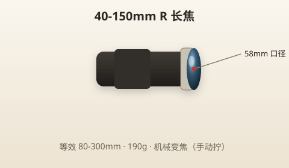
📷 建议图片：镜头全长伸出状态；与 14-42 并排对比大小。
等效焦段：为什么需要它？
14-42 最长等效 84mm。40-150 补上 80～300mm：
14-42: [========28──────84mm========]
40-150: [====80────300mm====]
| 位置 |
等效 |
感受 |
| 40mm |
80mm |
人像特写、隔离背景 |
| 100mm |
200mm |
动物园中距离 |
| 150mm |
300mm |
远景、舞台、鸟 |
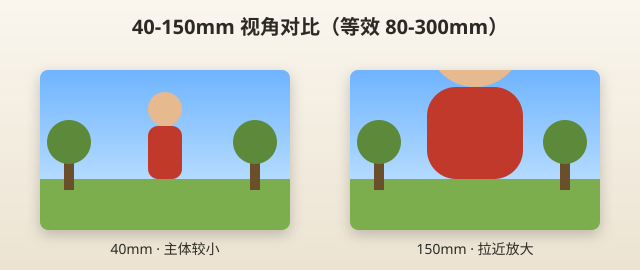
📷 建议图片：同一远景 40mm 与 150mm 对比。
最佳光圈与锐度
| 焦段 |
推荐光圈 |
说明 |
| 40～70mm |
F5.6 |
日常 |
| 100～150mm |
F5.6～F8 |
长端稍收一点更锐 |
| 最大 F4 |
40mm 端 |
略暗环境可用 |
虚化：150mm + F5.6 + 主体离背景远 → 背景明显比 14-42 更柔。
锐度：入门长焦，F5.6～F8 完全满足社交分享和 A4 打印。
适合拍什么？
| 场景 |
推荐焦段 |
模式 |
要点 |
| 动物园 |
100～150mm |
A / SCN |
玻璃反光注意角度 |
| 旅行远景 |
70～150mm |
A |
雪山、塔、对岸建筑 |
| 演唱会/舞台 |
100～150mm |
A, ISO↑ |
光线暗，别期望顶级画质 |
| 体育（看台） |
100～150mm |
S, 1/500+ |
连拍 |
| 人像特写 |
70～100mm |
A, F5.6 |
0.9m 外 |
| 街拍压缩 |
80～120mm |
A |
长焦压缩透视 |
| 月亮（入门） |
150mm |
M/S + 三脚架 |
见夜景章 |
| 宠物（室外） |
70～120mm |
A / C-AF |
距离够再拍 |
不适合拍什么？
| 场景 |
原因 |
替代 |
| 美食、桌面 |
最近 0.9m，无法俯拍近距 |
14-42 |
| 室内合影 |
空间不够退 |
14-42 @ 14mm |
| 餐厅、小房间 |
退到墙还拍不全 |
14-42 |
| 暗光手持长焦 |
150mm 需 1/300+ 快门 |
提 ISO 或三脚架 |
| 专业野生动物 |
300mm 等效仍嫌短 |
更长焦镜头（进阶） |
何时换镜头？
出现以下情况，关机换 40-150：
- [ ] 主体在 10 米外，14-42 拍出来太小
- [ ] 去动物园、看演出、登山观景
- [ ] 想拍背景强烈虚化的半身人像（户外）
- [ ] 想压缩街道透视（长焦街拍）
不必换：
换镜头标准流程
1. 关机
2. 按镜头释放钮，逆时针卸 14-42
3. 立刻装前后盖（14-42 会缩回）
4. 40-150 白点对白点，锁紧
5. 开机，试拍一张确认
6. 镜头朝地，减少进灰
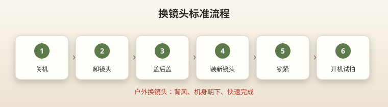
📷 建议图片：换镜头过程 4 步连拍；或正确持机方向。
⚠️ 户外换镜头：尽量背风、身体挡风、快速完成。有风有沙宁可不换。
场景实例详解
旅游（远景）
焦段：80～120mm
模式：A
光圈：F5.6～F8
ISO：AUTO
拍对岸的城堡、山顶的塔——14-42 拍出来只有一个小点，150mm 端能填满画面。
动物园
焦段：100～150mm
模式：A 或 S（动物动时用 S 1/500）
光圈：F5.6
ISO：400～3200（室内馆）
对焦：单点，对动物眼睛
技巧：找干净背景（虚化遮笼子）；玻璃展柜垂直贴屏减少反光。
街拍（长焦）
焦段：等效 80～120mm
模式：A
光圈：F5.6
长焦街拍更「隐蔽」，压缩街道层次感。站在街角拍对面行人。
建筑（局部）
焦段：80～100mm
模式：A
光圈：F8
拍建筑细节、窗户排列——不是整栋，是局部几何。
人像（户外半身/特写）
焦段：70～100mm（等效 140～200mm）
模式：A 或 SCN 人像
光圈：F5.6
距离：2～5m
长焦人像 flattering，畸变小。最近 0.9m，别靠太近对不上焦。
演唱会
焦段：150mm
模式：A
光圈：F5.6（固定）
ISO：1600～6400
快门：≥1/125，最好 1/250
现实预期：EP7 + 40-150 在暗场演唱会只能「记录氛围」，别和专业 70200 F2.8 比。开高 ISO 接受噪点。
体育
焦段：100～150mm
模式：S
快门：1/500～1/1000
ISO：AUTO
驱动：H 连拍
对焦：C-AF（连续）
看台距离远——150mm 等效 300mm 是上限，仍可能嫌小。
月亮（入门）
焦段：150mm
模式：M 或 S
光圈：F8
快门：约 1/125～1/250（看亮度微调）
ISO：200～400
支撑：三脚架必须
150mm 月亮占画面仍不大，但能拍出环形山细节。想要更大 → 更长焦或裁切。
宠物（室外）
焦段：70～120mm
模式：A，连拍
快门：≥1/500
长焦让宠物自然玩耍，你在远处拍，不打扰。
儿童（室外活动）
同体育，连拍 + 快快门。比 14-42 更适合运动场边家长席。
烟花
40-150 不是首选。烟花用广角 14-42 或三脚架固定机位。长焦难对准天空爆炸范围。
长焦手持技巧
长焦放大抖动。安全快门经验公式：
安全快门 ≈ 1 / 等效焦距
150mm → 等效 300mm → 建议 ≥ 1/300 秒
EP7 有 4.5 档防抖，可放宽约 2～3 档，但新手仍建议 ≥ 1/250。
| 快门太慢 |
现象 |
解决 |
| 1/60 @ 150mm |
大概率糊 |
ISO 提高或 F4 开大 |
| 风大 |
镜头抖 |
找支撑、连拍选最锐 |
与 14-42 的一天搭配示例
| 时间 |
镜头 |
拍什么 |
| 上午 city walk |
14-42 |
早餐、街道、合影 |
| 中午 zoo |
换 40-150 |
动物 |
| 下午回酒店 |
换 14-42 |
休息、室内 |
| 傍晚观景台 |
40-150 |
日落远山 |
实战 walkthrough：动物园半日实拍脚本（分步）
长焦最好的练习场就是动物园——距离远、主体动、常隔玻璃。按脚本走完，长焦就上手了。
进门前设置（一次设好）
镜头：40-150 模式：A 光圈：F5.6
ISO：AUTO（室内馆临时提上限到 3200）
对焦：单点（对动物眼睛）；动物快速移动切 C-AF + H 连拍
快门底线：≥1/250（150mm 端更要）
分场景操作
场景 1｜室外围栏动物（100～150mm）
→ 找栏杆空隙，光圈 F5.6 让栏杆虚化「消失」
→ 对焦动物眼睛，连拍抓表情
场景 2｜玻璃展柜（爬虫/水族）
→ 镜头前端尽量垂直贴近玻璃，减少反光
→ 关闪光灯！否则玻璃反光一片白
→ ISO 提到 1600～3200，快门≥1/125
场景 3｜奔跑 / 飞禽（150mm）
→ 切 S 模式 1/500～1/1000，或 SCN 运动
→ C-AF 追焦 + H 连拍，拍一串选最锐
场景 4｜干净背景特写（70～100mm）
→ 找天空/绿植做背景，F5.6 虚化
→ 得到「专业感」隔离主体
常见翻车与救法
| 现象 |
原因 |
救法 |
| 全糊 |
快门太慢 |
提 ISO / 开 F4 / 靠支撑 |
| 对到栏杆 |
单点压在栏杆上 |
移点到缝隙、开大光圈 |
| 玻璃反光 |
有闪光 / 角度 |
关闪光、贴玻璃、变角度 |
| 主体太小 |
150mm 仍不够 |
靠近 / 回家裁切 LF |
🎯 目标：一个半天拍 100+ 张，回家选 10 张清晰、背景干净的。练完你会明白长焦的「快门底线」和「找干净背景」两条铁律。
长焦手持稳定分步
1. 左手托住镜头下方（不是抓机身）
2. 双肘夹紧肋部形成支撑
3. 呼气到一半时屏息按快门
4. 连拍 3 张，选最锐的一张
5. 有栏杆/树干就靠上去当「人肉三脚架」
本章重点回顾
- 40-150 R = 80～300mm 等效，轻量长焦
- 最近对焦 0.9m——不能拍美食微距
- 动物园、远景、户外人像、舞台 = 主战场
- 长焦要快快门（≥1/250）+ 注意 ISO
- 换镜头务必关机，户外防风防尘
常见误区
| 误区 |
真相 |
| 「长焦万能」 |
室内、近距离不开 14-42 |
| 「防抖所以 1/30 也能手持 150mm」 |
防抖有极限 |
| 「F5.6 太暗」 |
白天完全够，暗场靠 ISO |
| 「演唱会能拍清楚歌手表情」 |
看台距离+光线限制大 |
拍摄练习
- 换镜头 5 次：计时，目标 1 分钟内完成
- 同场景 14-42 vs 40-150：感受「拉近」差异
- 150mm 手持测试：1/60 vs 1/250 各拍 5 张，看糊片率
- 户外人像：70～100mm，F5.6，拍 10 张
- 远景：找 50m 外建筑，150mm 填满画面
下一章：07-第一次出去拍照.md
第一次出去拍照
本章目标：出门前 3 分钟完成设置，带着「配置清单」自信开拍。
出门前三分钟检查清单
打印或存手机，每次出门过一遍：
□ 电池满电（或 ≥80%）
□ SD 卡已插，空间充足
□ 镜头盖已摘
□ 模式转盘 → A
□ ISO → AUTO（上限 3200）
□ 画质 → LF
□ 对焦 → S-AF，单点
□ 防抖 → 开
□ 曝光补偿 → 0
□ 默认镜头 → 14-42 EZ
□ 40-150 放包侧袋（如需）
□ 肩带牢固
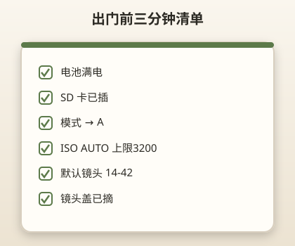
📷 建议图片：自制检查清单卡片实物照；或手机备忘录截图。
第一次出门：推荐路线
不要第一天就去复杂场景。建议：
- 小区或家附近（30 分钟）
- 附近公园（1 小时）
- 商业街（第二周）
第一次目标：拍清楚 30 张，不是拍「大片」。
标准配置（复制即用）
通用白天配置
模式转盘：A（光圈优先）
光圈：F5.6
ISO：AUTO（上限 3200）
白平衡：AUTO
图片质量：LF（大 JPEG）
对焦模式：S-AF（单次）
AF 区域：单点（可触摸）
驱动模式：单张
防抖：S-IS AUTO
测光：ESP 默认
曝光补偿：0
闪光灯：关（白天）
镜头：14-42 EZ
为什么这样设？
| 设置 |
理由 |
| A 模式 |
你只管光圈，快门自动 |
| F5.6 |
套头最佳 compromise：画质+景深 |
| ISO AUTO |
光线变化不用你管 |
| 上限 3200 |
控制噪点 |
| S-AF |
静物人像最稳 |
| 闪光关 |
白天闪光没必要 |
各参数第一次怎么理解
模式 → A
见 04-模式转盘.md。出门默认 A，特殊场景再换 SCN。
ISO → AUTO
相机根据光线自动调节感光度。你只需设上限 3200。
| 光线 |
相机大概用 |
| 大晴天 |
ISO 200 |
| 阴天 |
ISO 400～800 |
| 室内 |
ISO 800～3200 |
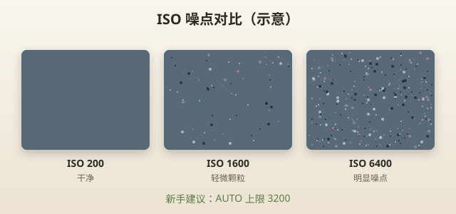
📷 建议图片：同一场景 ISO 200 / 1600 / 6400 对比（可选后期章内容）。
白平衡 → AUTO
第一个月不用改。餐厅偏黄、阴天偏冷——AUTO 大多能处理。
JPEG → LF
直接出片，手机/电脑能看。不用 RAW。
对焦 → S-AF + 单点 + 触摸
半按快门对焦，或点屏幕。对主体对焦，不是背景。
防抖 → 开
EP7 核心优势，别关。
曝光补偿 → 0
| 现象 |
调整 |
| 照片偏暗 |
+0.3 ～ +1.0 |
| 照片偏亮、天空死白 |
-0.3 ～ -1.0 |
A 模式下转前拨轮（快门按钮周围）调曝光补偿。
第一次按快门：六步法
1. 举起相机，屏幕朝向自己
2. 变焦到合适焦段（14-42 转变焦环）
3. 触摸屏幕将对焦框移到主体
4. 半按快门——等对焦框变绿
5. 构图稳定，完全按下快门
6. 回放放大检查是否清晰
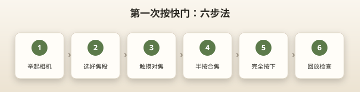
📷 建议图片：半按快门对焦 green box 截图。
按场景微调（仍用 14-42）
| 场景 |
改动 |
| 大合影 |
F8，14mm |
| 单人肖像 |
F4～F5.6，42mm |
| 树荫下偏暗 |
曝光补偿 +0.7 |
| 逆光人脸黑 |
+1.0 或 SCN 逆光 HDR |
| 小孩跑动 |
SCN 儿童 或 C-AF 连拍 |
包里带什么
| 物品 |
必要性 |
| 充满电的 EP7 + 14-42 |
必须 |
| 40-150（视行程） |
动物园/远景必带 |
| 备用电池 |
强烈建议 |
| 64GB+ SD 卡 |
必须 |
| 气吹 |
建议 |
| 镜头布 |
建议 |
| 小三脚架 |
夜景再带 |
不必第一天带：外闪、滤镜、反光板。
第一次拍摄主题建议
练习 1：静物（10 张）
- 小区花、长椅、自己的鞋
- A, F5.6, 25mm
- 练对焦和回放
练习 2：风景（10 张）
- 树、天空、小 pond
- A, F8, 14mm
- 练广角构图
练习 3：自拍/他拍（10 张）
- 翻转屏自拍 3 张
- 请路人帮你拍 2 张
- SCN 人像 5 张
拍完回家：5 分钟整理
- 回放删除明显糊片、闭眼、重复
- 选 3 张最满意的
- 看 EXIF：光圈、快门、ISO 各是多少？
- 记录一个问题：「今天哪张最不满意？为什么？」
- SD 卡备份到电脑或云盘
天气与 EP7 注意
EP7 不防尘防滴：
| 天气 |
建议 |
| 小雨 |
塑料袋套机，别换镜头 |
| 大太阳 |
找阴影看屏幕，或手遮光 |
| 极冷 |
电池消耗快，揣怀里暖 |
| 沙滩 |
风大别换镜头，防沙 |
实战 walkthrough：公园 30 张「闯关任务单」
第一次出门别乱拍。按这张任务单走，每关一个明确目标，30 张拍完你就完成了「新手上路」。全程 A 模式 + F5.6 起步。
关卡 1｜静物 ×6（练对焦）
· 长椅、花、路牌、自己的鞋
· 25mm F5.6，点屏对焦，半按变绿再拍
· 过关标准：6 张主体都清晰
关卡 2｜广角风景 ×6（练构图）
· 大树、天空、小路
· 14mm F8，开网格线，地平线放上/下三分线
· 过关标准：地平线不歪、画面有层次
关卡 3｜曝光补偿 ×6（练明暗控制）
· 同一树荫场景：0 / +0.7 / -0.7 各两张
· 前拨轮调 EV，回放对比亮度
· 过关标准：说得出哪张最合适、为什么
关卡 4｜虚化 ×6（练光圈）
· 花/朋友，42mm F4，靠近主体、背景拉远
· 过关标准：背景明显虚
关卡 5｜人 ×6（练综合）
· 请人帮拍你，或拍同行者半身
· 42mm F5.6，对眼睛
· 过关标准：眼睛清、构图舒服
回家结算
1. 删掉糊片、闭眼、重复
2. 每关选 1 张最好的（共 5 张）
3. 看这 5 张的 EXIF：快门都高于 1/60 吗？
4. 记 1 条今天最大的问题
🎯 过关线：30 张里至少 20 张清晰、5 张你自己满意，就算通关。
出门前 3 分钟：分步盲操
把出门检查清单背成动作流：
① 电量看一眼（≥80%） ② 卡在不在
③ 转盘拨到 A ④ 按 OK 进 SCP 扫一眼 ISO/AF
⑤ 摘镜头盖 ⑥ 装 14-42、40-150 进包
熟练后全程不超过 1 分钟。
本章重点回顾
- 出门用 A + F5.6 + ISO AUTO(3200) + S-AF
- 三分钟 checklist 养成习惯
- 第一次选简单场景，目标 30 张清楚照片
- 曝光补偿是「照片太亮/太暗」的第一调节手段
- 回家删废片、看 EXIF、备份
常见误区
| 误区 |
真相 |
| 第一次就去夜景/演唱会 |
挫败感强，先练白天 |
| 带太多配件 |
14-42 + 满电即可出门 |
| 不回放就猛拍 |
100 张糊片不如 10 张清楚 |
| 曝光补偿一直 +2 |
高光会死 |
拍摄练习
- 按 checklist 完整走一遍，计时 3 分钟
- 小区完成 30 张，至少 25 张清晰
- 练习曝光补偿：0 / +0.7 / -0.7 同场景对比
- 用 EXIF 记录：你的「安全快门」大概是多少（手持 42mm）
- 写 100 字心得：今天最大困难是什么
专题实战：
拍人像
本章目标：给朋友、家人拍出清晰、肤色自然、背景适度虚化的人像照片。
人像新手一句话配置
模式：A（或 SCN → 人像）
镜头：14-42 @ 35～42mm（半身） / 40-150 @ 70～100mm（户外特写）
光圈：F4～F5.6
ISO：AUTO
对焦：单点，对眼睛
曝光补偿：+0.3（逆光时 +0.7～+1.0）
驱动：单张或低速连拍
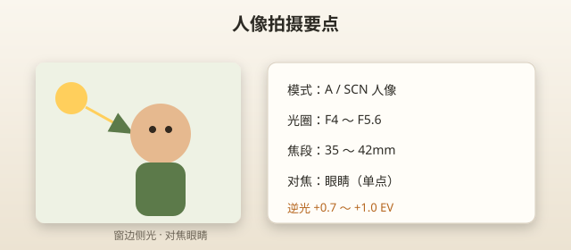
📷 建议图片：EP7 拍人像时的机位示意图；对焦在眼睛的屏幕截图。
镜头选择
| 情况 |
镜头 |
焦段 |
| 室内空间有限 |
14-42 |
25～42mm（等效 50～84mm） |
| 户外半身 |
14-42 |
35～42mm |
| 户外特写、虚化更强 |
40-150 |
70～100mm |
| 大合影 |
14-42 |
14～17mm，F8 |
避免：14mm 拍单人脸部特写——鼻子变大、边缘拉伸。
模式选择
| 模式 |
何时用 |
| A |
日常主力，可控虚化 |
| SCN 人像 |
肤色优化，省心 |
| SCN e-人像 |
机内轻微磨皮，直出友好 |
| iAUTO + Live Guide |
完全新手、交给朋友拍 |
第一个月：A 模式 F4～F5.6 足够。
光圈：背景虚不虚看它
| 光圈 |
效果 |
场景 |
| F3.5～F4 |
背景较虚 |
单人、杂背景 |
| F5.6 |
平衡 |
日常半身 |
| F8 |
前后都清晰 |
多人合影 |
套头虚化有限——接受它，或：42mm/长焦 + 靠近主体 + 背景远。
对焦：眼睛，永远是眼睛
触摸屏幕 → 对焦框移到最近那只眼睛 → 半按快门 → 构图 → 全按
| 错误对焦 |
后果 |
| 对鼻子/脸颊 |
眼睛虚 |
| 对背景 |
人糊 |
| 对头发 |
脸虚 |
开启 人脸检测（MENU → AF 菜单）可辅助，但单点选眼睛更准。
光线：人像成败关键
| 光线 |
效果 |
建议 |
| 窗边侧光 |
立体、肤色好 |
⭐ 室内最佳 |
| 阴天 |
柔和、无硬影 |
⭐ 户外最佳 |
| 黄金时刻（日出后/日落前 1h） |
暖、柔 |
⭐⭐⭐ |
| 正午顶光 |
眼窝黑影 |
找阴影或戴帽 |
| 逆光 |
脸黑或剪影 |
曝光补偿 +1.0 或闪光补 |
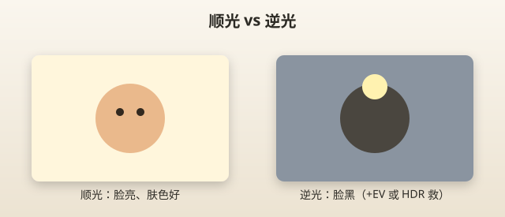
📷 建议图片：同一人顺光与逆光对比；逆光 + 曝光补偿后的改善。
逆光救脸
A, F5.6, 曝光补偿 +0.7～+1.0
或 SCN → 逆光 HDR
或 内置闪光灯补光（功率调低，-1EV 闪光补偿）
构图速成
| 方法 |
做法 |
| 三分法 |
眼睛在上 1/3 线 |
| 留白 |
看向方向留空间 |
| 全身 |
脚别切在关节，留脚踝 |
| 头顶 |
别切头发，上方留一点空 |
开 3×3 网格线 辅助。
机位与距离
| 景别 |
14-42 焦段 |
大约距离 |
| 大头 |
42mm |
1～1.5m |
| 半身 |
25～35mm |
1.5～2.5m |
| 全身 |
17～25mm |
3～5m |
参数速查表
室内窗边
镜头：14-42 @ 35mm
模式：A
光圈：F4
ISO：AUTO（通常 400～800）
快门：≥1/60（防抖辅助）
WB：AUTO
曝光补偿：0
户外阴天
镜头：14-42 @ 42mm 或 40-150 @ 80mm
模式：A
光圈：F5.6
ISO：AUTO（200～400）
曝光补偿：+0.3
户外逆光
模式：A 或 SCN 逆光 HDR
光圈：F5.6
曝光补偿：+0.7～+1.0
儿童
模式：SCN 儿童 或 A
镜头：14-42 @ 25mm
光圈：F4
快门：≥1/200
驱动：H 连拍
对焦：C-AF 或 S-AF 预对焦
宠物
同儿童，对焦眼睛，连拍。室外可用 40-150 远距离抓拍。
内置闪光灯人像
EP7 有弹出式闪光灯。
| 何时用 |
何时不用 |
| 室内暗、人脸黑 |
博物馆、演出 |
| 逆光补脸 |
已有良好自然光 |
| 填闪（白天压阴影） |
拍婴儿眼睛 |
功率调低：SCP 或 MENU 闪光补偿 -0.7～-1.0，避免油光脸。
色彩配置文件（进阶玩法）
EP7 正面 Profile Control 拨盘 可切换：
| 档位 |
效果 |
| 标准 |
默认 |
| 色彩 Profile |
胶片感、可调饱和 |
| 单色 Profile |
黑白、颗粒 |
拍人像试 色彩 Profile 2（类似 Portra）——直出肤色更柔。
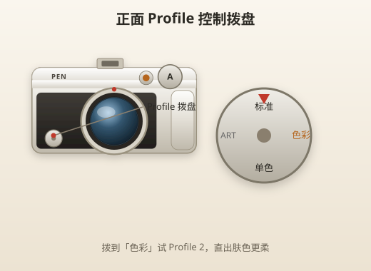
📷 建议图片：Profile 拨盘位置；标准 vs 色彩 Profile 人像对比。
常见错误
| 错误 |
现象 |
解决 |
| 14mm 贴脸拍 |
大鼻子 |
退远或加长焦 |
| 不对眼睛对焦 |
眼虚 |
单点对眼 |
| 逆光不补偿 |
脸黑 |
+EV 或 HDR |
| F8 室内 |
糊 |
F4 + ISO |
| 闪光满功率 |
油亮 |
降闪光补偿 |
| 不看快门 |
1/15 秒糊 |
提高 ISO |
实战 walkthrough：窗边人像 10 分钟布光（分步）
不用任何灯，只用一扇窗，就能拍出立体好看的人像。这是新手最该掌握的一套。
布置
1. 找一扇大窗（白天，不要直射硬阳光）
2. 人侧对窗，让光从侧面 45° 打脸
3. 人离窗约 1～1.5m，别贴着
4. 你站在窗与人之间稍偏，背对窗拍
拍摄
镜头：14-42 @ 35～42mm
模式：A 光圈：F4 ISO：AUTO
对焦：单点，压在「靠窗那只眼睛」
曝光补偿：0，若脸偏暗 +0.3
快门：确认 ≥1/60（低了提 ISO）
分步微调
第 1 张｜侧光 45°，拍半身
→ 观察：脸一侧亮、一侧稍暗 = 立体感（对了）
第 2 张｜让人稍转向窗
→ 脸更亮、阴影更少（更「甜」）
第 3 张｜让人转离窗
→ 阴影更重、更「情绪」
🔑 结论：转动人相对窗的角度 = 控制脸上光影。这比买灯更重要。
逆光救脸分步（窗在人身后时）
1. 保持 A, F5.6
2. 曝光补偿加到 +0.7 ～ +1.0（脸提亮）
3. 若背景过曝可接受（要脸不要背景）
4. 或改 SCN → 逆光 HDR
5. 仍暗 → 弹内置闪光，闪光补偿 -1EV 补脸
三种景别一次拍全（分步）
同一个人，练「全身→半身→特写」的机位与焦段切换：
全身｜17～25mm，退到 3～5m，脚踝以下留空间，别切关节
半身｜25～35mm，1.5～2.5m，腰或胸口构图
特写｜42mm，1～1.5m，对眼睛，头顶留一点空
| 景别 |
焦段 |
距离 |
对焦点 |
| 全身 |
17-25mm |
3-5m |
面部/身体 |
| 半身 |
25-35mm |
1.5-2.5m |
眼睛 |
| 特写 |
42mm |
1-1.5m |
眼睛 |
🎯 目标：同一人拍出 3 种景别各 2 张，理解「焦段 + 距离」如何决定景别。
本章重点回顾
- 人像默认 A, F4～F5.6, 对焦眼睛
- 14-42 用 35～42mm，户外特写可 40-150
- 光线 > 器材；窗边、阴天、黄金时刻最好
- 逆光记得 曝光补偿 +0.7
- 套头虚化有限，靠焦段+距离弥补
常见误区
| 误区 |
真相 |
| 「虚化不够是相机差」 |
套头 F5.6 正常，技巧可改善 |
| 「人像必须大光圈 F1.8」 |
F4～F5.6 日常够用 |
| 「e-人像可以救一切」 |
光线和对焦才是根本 |
| 「竖拍不用翻转屏」 |
翻转屏 low angle 人像很香 |
拍摄练习
- 窗边单人 10 张，F4，对焦眼睛
- 逆光 5 张：无补偿 vs +1.0 对比
- 14mm vs 42mm 同一人对比畸变
- SCN 人像 vs A F5.6 对比肤色
- 给同一人拍：全身、半身、特写 各 2 张
相关：09-拍风景.md | 10-夜景.md
拍风景
本章涵盖旅行、街拍、建筑等「非人像为主」的日常拍摄——EP7 双镜头的实战参数。
风景新手一句话配置
模式：A
镜头：14-42 @ 14～17mm（大场景） / 40-150 @ 80～150mm（远景）
光圈：F5.6～F8
ISO：AUTO（通常 200～400）
对焦：单点，对画面 1/3 处或无穷远标志
曝光补偿：0；天空很亮时 -0.3～-0.7
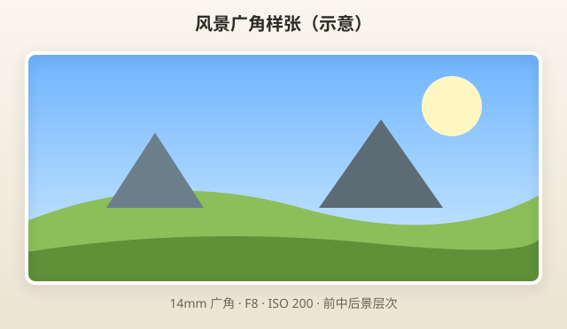
📷 建议图片：14mm 大场景风景样张；标注地平线位置。
旅行
用什么
| 项目 |
推荐 |
| 镜头 |
14-42 为主，远景换 40-150 |
| 模式 |
A |
| 光圈 |
F5.6～F8 |
| 焦段 |
14mm 地标+人，25mm 街景 |
典型场景
地标合影
14-42 @ 14mm, A, F8, ISO AUTO
对焦中间人物，景深覆盖前后
小巷街拍
14-42 @ 17～25mm, A, F5.6
快门 ≥1/125 handheld
远山/对岸
40-150 @ 100～150mm, A, F5.6～F8
常见错误
| 错误 |
解决 |
| 什么都用广角 |
远景换长焦 |
| 地平线歪 |
开水平仪（MENU → 水平 gauge） |
| 天空过曝 |
曝光补偿 -0.3 或 SCN 逆光 HDR |
街拍
用什么
镜头：14-42 @ 17～25mm（融入环境）或 40-150 @ 80mm（远距离）
模式：A
光圈：F5.6
ISO：AUTO
快门：≥1/250（动态街头）
技巧
- 提前对焦：半按快门预对焦在马路上
- 连拍：行人走过时 H 连拍
- 低调：长焦 80mm 街角偷拍更有层次
常见错误
| 错误 |
说明 |
| 怼脸拍陌生人 |
尊重距离，长焦或广角环境 |
| 1/30 秒 handheld |
糊——提 ISO |
建筑
用什么
镜头：14-42 @ 14mm（整栋） / 40-150 @ 80mm（局部）
模式：A 或 AP → 梯形校正
光圈：F8
14mm 拍整栋
- 相机尽量水平，减少 converging verticals（向中心汇聚）
- 仰拍必然「倒梯形」——可 AP 梯形校正或后期
│ ← 建筑垂直线
│ 相机水平时更直
───┴───
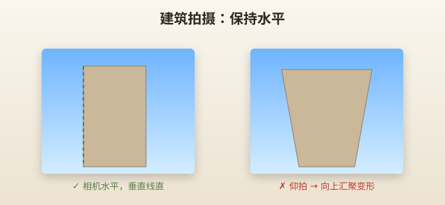
📷 建议图片：仰拍 vs 水平拍建筑对比。
40-150 拍细节
窗户、纹理、对称——80～100mm 压缩感好。
常见错误
| 错误 |
后果 |
| 14mm 极端仰角 |
建筑像要倒 |
| F3.5 |
边缘画质和景深不必要 |
纯风景（自然）
用什么
镜头：14-42 @ 14mm
模式：A 或 SCN → 风景
光圈：F8
ISO：200（AUTO 即可）
对焦：前景 1/3 或 ∞
黄金时刻
日出后、日落前 1 小时——侧光、色彩 richest。
海景 / 沙滩
SCN → 海滩&雪景 或 A F8，注意 -0.3 EV 防高光过曝。
日落
SCN → 日落，或 A F8，曝光补偿 -0.3～-0.7 保留太阳层次。
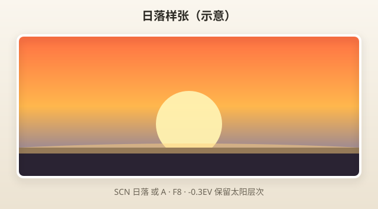
📷 建议图片：SCN 日落模式样张。
美食（归入生活风景）
镜头：14-42 @ 14～25mm
模式：A
光圈：F5.6
角度：45° 或 90° 俯拍
曝光补偿：+0.3～+0.7
ISO：AUTO（餐厅常 800～1600）
最近 20cm——别挡光。餐厅暖光 AUTO WB 即可。
全景
两种方式：
| 方法 |
操作 |
| SCN → 全景 |
按提示平移，机内拼接 |
| 后期拼接 |
A F8 多张重叠，手机 App 拼 |
SCN 全景适合初学者；注意平移速度均匀。
参数总表
| 场景 |
模式 |
镜头 |
光圈 |
ISO |
快门 |
对焦 |
| 旅行合影 |
A |
14-42@14 |
F8 |
AUTO |
自动 |
人物 |
| 街拍 |
A |
14-42@25 |
F5.6 |
AUTO |
≥1/250 |
单点 |
| 建筑整体 |
A |
14-42@14 |
F8 |
AUTO |
自动 |
∞/1/3 |
| 建筑细节 |
A |
40-150@80 |
F8 |
AUTO |
自动 |
单点 |
| 自然风景 |
A/SCN风景 |
14-42@14 |
F8 |
AUTO |
自动 |
1/3 |
| 日落 |
SCN日落 |
14-42@14 |
F8 |
AUTO |
自动 |
∞ |
| 美食 |
A |
14-42@25 |
F5.6 |
AUTO |
≥1/60 |
食物 |
| 远景 |
A |
40-150@150 |
F5.6 |
AUTO |
≥1/250 |
∞ |
防抖与三脚架
| 情况 |
建议 |
| 白天 handheld |
防抖足够 |
| 黄昏慢门 |
ISO 提高优先；或小三脚架 |
| 流水慢门 |
三脚架 + S 模式 1/4s 或 SCN |
实战 walkthrough：黄金时刻风景（日落前 1 小时分步）
风景成败一半靠光。挑日落前 1 小时（黄金时刻）出门，按步骤拍一组。
到场准备
镜头：14-42（远景备 40-150）
模式：A 光圈：F8 ISO：AUTO（通常 200）
对焦：单点对前景 1/3 处，或远景对 ∞
开：网格线 + 水平仪
曝光补偿：天空亮时 -0.3 ～ -0.7
分步拍摄
第 1 步｜找前景
→ 石头、花、栏杆放画面下 1/3，制造纵深
第 2 步｜定地平线
→ 天空好看 → 地平线放下 1/3
→ 地面好看 → 地平线放上 1/3
→ 别放正中
第 3 步｜控高光
→ 拍一张看回放，天空死白 → -0.3EV 再拍
→ 直到云层有细节
第 4 步｜等光
→ 太阳越低颜色越暖，多等几分钟连拍
→ 太阳入镜时 F8 可拍出星芒
第 5 步｜换长焦收局部
→ 40-150 @ 100~150mm 压缩远山/城市天际线
日落曝光对照
| 想要 |
曝光补偿 |
结果 |
| 保留天空层次 |
-0.3～-0.7 |
云和太阳有细节，地面偏暗 |
| 保留地面细节 |
0～+0.3 |
地面清楚，天空可能过曝 |
| 剪影 |
-1.0～-1.5 |
前景全黑轮廓 |
🎯 目标：一次日落拍 3 组（前景纵深 / 地平线构图 / 长焦局部），回家各选 1 张。
城市街景「故事线」分步
一条街拍成一组有叙事的照片：
① 全景（14mm）交代环境 → 这是哪
② 中景（25mm）街道生活 → 发生什么
③ 特写（42mm 或长焦）细节 → 招牌、手、光影
④ 人（长焦 80mm 远距离）→ 街头人文
四张排在一起，就是一个地方的完整印象。
本章重点回顾
- 风景默认 A + F5.6～F8 + 14-42 广角
- 远景、压缩感 → 40-150
- 地平线用网格/水平仪
- 天空亮 → 负曝光补偿
- 建筑尽量水平，或 AP 梯形校正
常见误区
| 误区 |
真相 |
| 风景必须 F16 |
套头 F8 已够，F16 易 diffraction 软 |
| 永远最广角 |
25mm 街景 often 更好 |
| 不对焦就拍 |
无限远或 1/3 对焦原则 |
| 日落拍成剪影 |
要层次就负补偿或 HDR |
拍摄练习
- 同一公园：14mm / 25mm / 150mm 各 3 张
- 建筑：水平 vs 仰拍对比
- 日落：SCN vs A F8 对比
- 美食俯拍 5 张，练习 +0.5 EV
- SCN 全景试 2 次
下一章：10-夜景.md
夜景拍摄
本章目标：城市夜景、烟花、星空入门——直接给参数，少讲理论。
夜景核心认知
EP7 拍夜景靠三样东西：
- 机身防抖（手持 1/10～1/20 秒有可能）
- 控制 ISO（尽量 ≤3200，能 1600 更好）
- 三脚架（烟花、光轨、星空几乎必须）
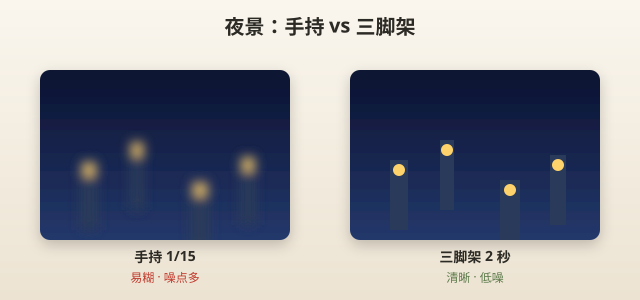
📷 建议图片：同夜景 handheld 糊 vs 三脚架清晰对比。
城市夜景（手持）
配置
模式：A 或 SCN → 夜景
镜头：14-42 @ 14～25mm
光圈：F3.5～F4（尽量开大）
ISO：AUTO 或手动 1600～3200
快门：相机自动，手持尽量 ≤1/15（防抖辅助）
曝光补偿：0 或 -0.3（防灯光过曝）
对焦：单点，对亮区或 ∞
防抖：开
SCN 夜景 vs A 模式
|
SCN 夜景 |
A 模式 |
| 省心 |
⭐⭐⭐ |
⭐⭐ |
| 可控 |
⭐ |
⭐⭐⭐ |
| 推荐 |
第一次夜景 |
熟悉后 |
常见错误
| 错误 |
现象 |
| F8 手持 |
快门 1/2 秒，全糊 |
| ISO 12800 |
噪点满屏 |
| 对暗处对焦 |
拉风箱对不上 |
技巧：对路灯、橱窗等亮处对焦，再 recompose。
夜景人像
模式：SCN → 人像+夜景 或 A
镜头：14-42 @ 25～42mm
光圈：F4
ISO：1600～3200
曝光补偿：+0.3（脸不要太黑）
可用内置闪光 -1EV 补脸，避免背景全黑。
烟花
推荐：AP → Live Composite
EP7 拍烟花的「杀手锏」——实时叠加光轨，背景亮度不变。
基本流程
1. 模式转盘 → AP → Live Composite
2. 三脚架固定
3. 镜头：14-42 @ 14mm（容纳天空范围）
4. 光圈：F8～F11
5. ISO：200
6. 对焦：手动 MF 对无穷远，或对远处亮处一次 S-AF 后改 MF
7. 按快门开始，观看屏幕光轨累积
8. 烟花结束再按快门停止
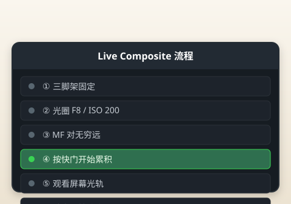
📷 建议图片：Live Composite 设置界面；烟花成片样张。
备选：SCN → 烟花
更自动，成功率也不错。三脚架仍建议。
参数表
| 方法 |
模式 |
镜头 |
光圈 |
ISO |
支撑 |
| Live Composite |
AP |
14-42@14 |
F8 |
200 |
三脚架 |
| SCN 烟花 |
SCN |
14-42@14 |
自动 |
自动 |
三脚架 |
| 手持抓拍 |
A |
14-42@14 |
F4 |
3200 |
手持，单发 |
常见错误
| 错误 |
后果 |
| 手持 Live Composite |
背景糊成一片 |
| 150mm 长焦 |
框不住爆炸范围 |
| ISO 3200 + F4 长曝 |
噪点+过曝 |
光轨（车轨）
模式：SCN → 光轨 或 AP → Live Composite
镜头：14-42 @ 14mm
光圈：F8～F11
ISO：200
三脚架：必须
地点：天桥、路口俯拍
SCN 光轨对新手最友好。
星空入门
手持星空（SCN）
模式：SCN → 手持星空（Handheld Starlight）
镜头：14-42 @ 14mm
三脚架：强烈建议（虽叫 handheld， tripod 成功率更高）
EP7 防抖 + 机内堆栈，能拍「有星星」的照片，不是天文级。
三脚架星空（进阶）
模式：M 或 A
镜头：14-42 @ 14mm（广角收星更多）
光圈：F3.5（最大）
快门：约 15～20 秒（14mm 可稍长，有拖线风险）
ISO：1600～3200
对焦：MF 无穷远，或对焦明亮星星
驱动：单张或 2s 自拍定时
500 法则（粗略）：快门秒数 ≤ 500 / 等效焦距
14mm 等效 28 → 约 18 秒上限。
40-150 拍星空？
不推荐。14mm 广角才是星空入门焦段。
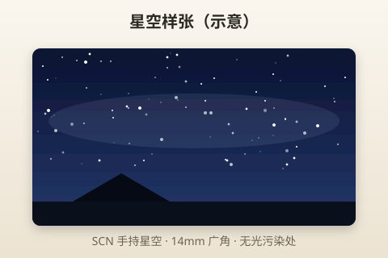
📷 建议图片：SCN 手持星空或三脚架星空样张。
月亮
模式：M 或 S
镜头：40-150 @ 150mm
光圈：F8
快门：约 1/125～1/250
ISO：200～400
三脚架：必须
对焦：MF 无穷远 或 S-AF 对月亮后锁 MF
测光：点测光月亮，或 M 模式试拍微调
曝光补偿：月亮很亮，常需 -1～-2 EV
150mm 月亮仍较小——可裁切 LF JPEG（2000 万像素有余量）。
别信「手机拍超大月亮」——很多是 AI 合成。相机拍的是真实光学。
演唱会 / 暗光活动
模式：A
镜头：40-150 @ 100～150mm
光圈：F5.6
ISO：3200～6400（临时提高上限）
快门：≥1/125
对焦：单点，预对焦舞台
驱动：H 连拍
预期管理：噪点会有，糊片会有——连拍选最好的。
静音拍摄
博物馆、演出部分场景：
SCN → 静音 或 AP → 静音
电子快门，无机械声
注意：某些灯光下 banding
B 模式简介（第二个月）
| 子模式 |
用途 |
| BULB |
按住快门曝光 |
| TIME |
按两次起止 |
| LIVE COMP |
同 AP Live Composite |
模式转盘 → B → 屏幕选子模式。
夜景参数速查总表
| 场景 |
模式 |
镜头 |
光圈 |
ISO |
快门 |
三脚架 |
| 城市 handheld |
A/SCN夜景 |
14-42@17 |
F4 |
1600～3200 |
自动 |
否 |
| 夜景人像 |
SCN人像+夜景 |
14-42@35 |
F4 |
3200 |
自动 |
否 |
| 烟花 |
AP LiveComp |
14-42@14 |
F8 |
200 |
累积 |
是 |
| 车轨 |
SCN光轨 |
14-42@14 |
F8 |
200 |
累积 |
是 |
| 星空入门 |
SCN手持星空 |
14-42@14 |
自动 |
自动 |
自动 |
建议 |
| 星空三脚架 |
M/A |
14-42@14 |
F3.5 |
1600～3200 |
15～20s |
是 |
| 月亮 |
M/S |
40-150@150 |
F8 |
200～400 |
1/200 |
是 |
| 演唱会 |
A |
40-150@150 |
F5.6 |
6400 |
≥1/125 |
否 |
实战 walkthrough：城市夜景手持（分步，无三脚架）
第一次夜景不用带三脚架，靠 EP7 的强防抖也能拍。挑一个有灯光的街口。
步骤 1｜设置
模式：A 光圈：F3.5～F4（尽量开大）
ISO：AUTO（上限临时提到 3200）
对焦：单点 防抖：S-IS AUTO（必开）
曝光补偿：-0.3（防灯光过曝）
步骤 2｜对焦技巧（夜里对焦最难）
→ 把对焦点移到「路灯 / 亮橱窗」这类高对比亮处
→ 半按锁定（听到滴声）→ 保持半按，重新构图 → 按下
步骤 3｜稳住拍
→ 双肘夹紧、屏息、轻按
→ 连拍 3 张，回放选最锐
步骤 4｜检查快门
→ 回放按 INFO，快门若低于 1/15 → 再开大光圈或提 ISO
手持夜景排错
| 现象 |
原因 |
解法 |
| 整体糊 |
快门太慢+手抖 |
F3.5全开、ISO↑、找栏杆靠 |
| 灯白成一团 |
过曝 |
-0.7EV |
| 对不上焦 |
对着暗处 |
对亮处再重构图 |
| 噪点满屏 |
ISO 6400+ |
上限压回 3200 |
实战 walkthrough：Live Composite 拍车轨（分步 + 排错）
这是 EP7 的「杀手锏」，必须三脚架。找一座能俯瞰车流的天桥。
步骤 1｜模式转盘 → AP → Live Composite
步骤 2｜三脚架固定，构图让车道贯穿画面
步骤 3｜光圈 F8，ISO 200
步骤 4｜对焦：S-AF 对远处路灯一次 → 切 MF 锁死（防止重新拉焦）
步骤 5｜先按一次快门「取暗场基准」（相机提示）
步骤 6｜再按快门开始 → 屏幕上车灯轨迹逐渐累积
步骤 7｜轨迹够长够满意 → 再按快门停止
Live Composite 排错
| 现象 |
原因 |
解法 |
| 全黑 |
没车/时间太短 |
多等车流、延长累积 |
| 背景过曝 |
ISO 太高/光圈太大 |
ISO200、F8～F11 |
| 轨迹糊 |
三脚架被碰/风吹 |
稳固、用 2s 自拍触发 |
| 中途拉焦 |
用了 AF |
对焦后切 MF 锁死 |
🎯 目标：手持夜景选出 1 张清晰街景；Live Composite 拍出 1 张完整车轨。两者都成，你就跨过夜景门槛了。
本章重点回顾
- 手持夜景：开大光圈 F4 + ISO 1600～3200 + 防抖
- 烟花/光轨：三脚架 + AP Live Composite 或 SCN
- 星空：14mm 广角，SCN 手持星空入门
- 月亮：40-150 @ 150 + 三脚架 + 快快门
- 暗光接受噪点，连拍选最锐
常见误区
| 误区 |
真相 |
| 夜景关闭防抖 |
手持更需要防抖 |
| 烟花 handheld |
几乎必糊 |
| 星空用 150mm |
广角才收得下天 |
| ISO 100 夜景 |
快门太慢 |
拍摄练习
- 家附近路灯场景：SCN 夜景 vs A F4 ISO3200
- 找天桥：SCN 光轨 3 张（三脚架）
- 郊外或无光污染处：SCN 手持星空
- 满月夜：40-150 拍月亮，试 3 组快门
- 记录：哪张 ISO 噪点你无法接受——那就是你的 ISO 上限
相关：11-菜单详解.md | 12-常见问题.md
菜单详解
本章目标：不翻译整本说明书，只告诉你哪些必改、哪些别碰、哪些以后学。
菜单导航方式
MENU 键 → 左侧图标选大类 → 上下键选条目 → OK 确认
| 图标 |
类别 |
新手关注度 |
| 相机 |
拍摄相关 |
⭐⭐⭐ |
| 视频 |
录像 |
⭐ |
| 播放 |
回放设置 |
⭐⭐ |
| 自定义 |
按钮/显示 |
⭐⭐ |
| 扳手 |
设置/格式化 |
⭐⭐⭐ |
更快的方式：P/A/S/M 模式下按 OK → 超级控制面板（SCP），80% 日常设置在里。
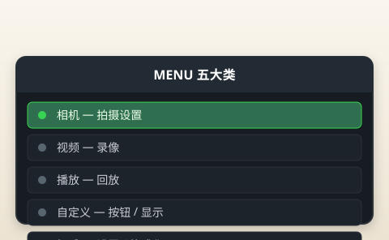
📷 建议图片：MENU 五大类图标截图。
必改清单（第一天）
| 菜单路径 |
设置 |
值 |
| 相机 → 图片质量 |
画质 |
LF |
| 相机 → ISO |
AUTO 上限 |
3200 |
| 拍摄 → 防抖 |
IS |
S-IS AUTO |
| 拍摄 → 对焦模式 |
AF |
S-AF |
| 自定义 → 网格线 |
显示 |
3×3 |
| 扳手 → 格式化 |
新卡 |
执行一次 |
| 扳手 → 日期时间 |
|
准确 |
详见 03-第一次开机设置.md。
建议改（第一～二周）
| 菜单路径 |
设置 |
推荐 |
原因 |
| AF → AF 区域 |
默认区域 |
单点 |
精准对焦 |
| AF → 人脸检测 |
|
开 |
人像辅助 |
| 自定义 → 水平 gauge |
|
开 |
风景建筑 |
| 自定义 → 预览 |
预览效果 |
开 |
WYSIWYG |
| 扳手 → 省电 |
休眠 |
1min 或 3min |
省电 |
| 播放 → 旋转 |
自动旋转 |
开 |
回放方便 |
不要碰（第一个月）
| 菜单 |
为什么 |
| 像素映射 |
除非有坏点，厂家工具 |
| 固件降级 |
除非出问题 |
| 语言乱改 |
改不回去麻烦 |
| 出厂重置 |
会清所有设置 |
| RAW 相关 |
先玩 JPEG |
| 色彩空间 Adobe RGB |
新手 sRGB 即可 |
| 镜头校准微调 |
没问题的镜头别动 |
| 快门计数重置 |
无意义 |
⚠️ 误触出厂重置：MENU → 扳手 → 重置 → 确认。会清空本教程所有设置。
以后再学
| 功能 |
何时学 |
| RAW / RAW 编辑 |
JPEG 满意后 |
| 按钮自定义（AEL/Fn） |
熟练 A 模式后 |
| 对焦包围 / 景深合成 |
微距进阶 |
| 间隔拍摄 / 延时 |
视频爱好者 |
| Wi-Fi / OI.Share 传图 |
需要手机发圈时 |
| 外接闪光灯 RC 设置 |
买外闪后 |
| 色彩 Profile 注册 |
玩直出风格时 |
| 电子快门 banding |
静音模式遇条纹时 |
超级控制面板（SCP）图标速查
按 OK 后常见图标：
| 图标含义 |
新手频率 |
说明 |
| ISO |
高 |
AUTO/手动 |
| WB 白平衡 |
中 |
默认 AUTO |
| 测光模式 |
低 |
ESP 默认 |
| AF 模式 |
高 |
S-AF / C-AF |
| AF 区域 |
高 |
单点 |
| 驱动 |
中 |
单张/连拍 |
| 自拍定时 |
低 |
2s/12s |
| 闪光模式 |
中 |
强制关/自动 |
| 防抖 |
低 |
常开 |
| 曝光补偿 |
高 |
A 模式前拨轮也可 |
📷 建议图片：SCP 每个图标用中文标注。
拍摄菜单（相机图标）精选
必须理解
| 条目 |
建议 |
说明 |
| 图片质量 |
LF |
大 JPEG |
| 图片比例 |
4:3 |
默认，别改 16:9 丢像素 |
| ISO |
AUTO max 3200 |
|
| 降噪 |
标准 |
高 ISO 长曝降噪默认即可 |
| 白平衡 |
AUTO |
|
按需使用
| 条目 |
何时 |
| 连拍 H/L |
运动、儿童 |
| 自拍定时 |
合影 |
| 包围曝光 bracketing |
进阶 HDR |
| 静音 / 静音快门 |
博物馆 |
可忽略
| 条目 |
说明 |
| 镜头 Info |
看 attached lens |
| 多重测光细节 |
ESP 够用 |
AF 菜单精选
| 条目 |
新手设置 |
| 对焦模式 |
S-AF |
| AF 区域 |
单点 / 小群 |
| 人脸检测 |
开 |
| 对焦锁定 |
AEL 默认（进阶） |
| 对焦 peaking |
MF 时用 |
C-AF + TR（追踪）：第二个月拍宠物再开。
自定义菜单精选
| 条目 |
建议 |
| 网格线 |
3×3 |
| 水平 gauge |
开 |
| 直方图 |
学曝光后开 |
| 高光警告 |
可选开 |
| 按钮功能 |
默认，熟悉后改 Fn |
| 拨盘功能 |
A 模式后拨轮=光圈（默认） |
Fn / AEL 按钮
默认：
- AEL/AFL：曝光/对焦锁定
- Fn（快门旁 Shortcut）：SCN/AP/ART 子模式切换
第一个月不用改。
播放菜单精选
| 条目 |
用途 |
| 旋转显示 |
自动 |
| 幻灯片 |
电视 HDMI 输出 |
| 编辑 |
机内裁剪、黑白——应急 |
| RAW 编辑 |
有 RAW 才用 |
设置菜单（扳手）精选
| 条目 |
说明 |
| 格式化 |
清空 SD 卡 |
| 日期时间 |
|
| 固件更新 |
偶尔检查 |
| USB 模式 |
充电 / 存储 |
| Wi-Fi |
传手机 |
| 省电 |
自动关机时间 |
| 传感器清洁 |
换镜头后自动振动 |
视频菜单（简要）
| 条目 |
新手建议 |
| 分辨率 |
1080p 60fps 日常 |
| 4K |
需要裁切时再用 |
| 麦克风 |
机内立体声，无外接口 |
| 防抖 |
开，但视频防抖弱于拍照 |
菜单 vs SCP：什么时候进 MENU？
| 需求 |
用哪个 |
| 改 ISO/WB/AF |
SCP（OK 键） |
| 改画质 RAW/LF |
MENU |
| 格式化 |
MENU |
| 网格线 |
MENU |
| 固件更新 |
MENU |
| 曝光补偿 |
前拨轮（A 模式） |
原则：能 SCP 就不 MENU，少迷路。
新手菜单学习路线
第 1 天：画质、ISO、格式化、日期
第 1 周：SCP 全部图标认一遍
第 2 周：AF 菜单、网格、水平仪
第 1 月：播放编辑、Wi-Fi 传图
第 2 月：按钮自定义、RAW、间隔拍摄
实战 walkthrough：SCP 逐图标认一遍（10 分钟）
按 OK 打开超级控制面板，跟着把最常用的图标点一遍，建立「肌肉记忆」。
步骤 1｜P/A/S/M 任一模式 → 按 OK
步骤 2｜十字键依次高亮，转拨轮改值，逐个熟悉：
① ISO → 试着在 AUTO / 800 / 3200 间切换
② WB → AUTO / 白炽灯，看画面色调变化
③ AF 模式 → S-AF ↔ C-AF
④ AF 区域 → 单点 ↔ 小群点
⑤ 驱动 → 单张 ↔ H 连拍
⑥ 曝光补偿 → -1 / 0 / +1，看画面明暗
⑦ 闪光 → 关 ↔ 强制
步骤 3｜半按快门退出，随手拍一张验证
✅ 过关：闭着菜单也能在 30 秒内把 ISO、WB、AF 三项改对。
分步：菜单迷路自救
新手常在 MENU 里找不到东西。记住这套「回家路线」：
不确定改哪 → 先按 OK 试 SCP（80% 设置都在）
SCP 没有 → MENU → 按大类图标定位：
画质/ISO/降噪 …… 相机图标
对焦相关 ……… AF 菜单
网格/按钮/显示 … 自定义（齿轮）
格式化/时间/固件 … 扳手
找不到就退 → 半按快门直接回到拍摄，不会改坏
误入危险项 → 看到「重置/格式化」别乱确认
必改项一次设置分步（第一天照做）
1. 相机 → 图片质量 → LF
2. 相机 → ISO → AUTO，上限 3200
3. AF → 对焦模式 → S-AF；区域 → 单点
4. 拍摄 → 防抖 → S-IS AUTO
5. 自定义 → 网格线 → 3×3
6. 扳手 → 格式化（新卡）→ 日期时间
本章重点回顾
- OK = SCP 是日常主力
- 必改：LF、ISO 上限 3200、S-AF、格式化
- 第一个月别碰：重置、RAW、镜头校准
- 人脸检测、网格、水平仪——第二周开
- 菜单深不必全背，按本清单即可
常见误区
| 误区 |
真相 |
| 菜单要全背 |
SCP + 10 项足够 |
| 关掉所有降噪 |
标准即可 |
| Adobe RGB 更专业 |
不后期就 sRGB |
| 乱改按钮 |
默认先学标准操作 |
拍摄练习
- 闭卷操作：MENU 找到格式化（不执行）、图片质量、ISO 上限
- SCP 练习：30 秒内改 ISO、WB、AF 模式
- 开启网格+水平仪，拍 3 张风景
- 浏览 AF 菜单，确认 S-AF + 单点 + 人脸开
- 记录 3 个你「找不到」的菜单项，对照说明书索引
问题排查 → 12-常见问题.md
常见问题
本章目标：照片出问题时的「急救手册」——按现象找原因、按原因给解法。
使用方式
- 找到你的问题标题
- 看「最可能原因」
- 按顺序试「解决步骤」
- 仍不行 → 查说明书或售后
为什么照片模糊？
最可能原因（按概率）
| 排名 |
原因 |
典型场景 |
| 1 |
快门太慢，手抖 |
室内 F8、暗光 |
| 2 |
对焦错了 |
对背景、对太近 |
| 3 |
主体在动 |
小孩、宠物 |
| 4 |
镜头脏 / 雾 |
指纹、冬天进暖室 |
| 5 |
镜头没锁紧 |
罕见但严重 |
解决步骤
1. 回放 → 按 INFO 看快门速度
- 手持：快门 ≥ 1/焦距等效（42mm → 1/60+）
- 150mm → 1/250+
2. 快门太慢 → 开大光圈 F4 或提高 ISO
3. 检查对焦框是否在主体上
4. 运动主体 → C-AF 连拍 或 SCN 儿童/运动
5. 擦镜头；确认镜头「咔」锁紧
6. 确认防抖开启（S-IS AUTO）
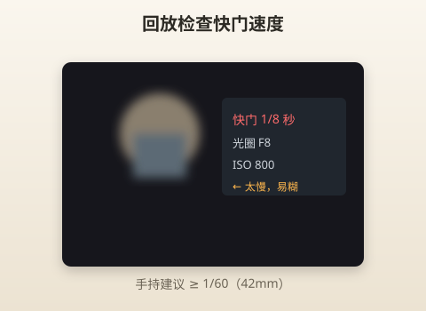
📷 建议图片：回放界面显示快门 1/8 秒的糊片截图。
为什么背景不虚？
原因
| 原因 |
说明 |
| 光圈太小 |
F8 背景更实 |
| 焦段太短 |
14mm 广角难虚化 |
| 离主体太远 |
套头常见 |
| 主体离背景太近 |
物理限制 |
| M4/3 景深较深 |
系统特性 |
解决步骤
1. A 模式 → F4 或 F3.5（14-42 广角端）
2. 用 42mm 或 40-150 @ 80mm+
3. 靠近主体（最近 0.2m/0.9m 注意）
4. 让主体离背景尽量远（1m+）
5. 接受套头极限——或日后 F1.8 定焦
对比测试：同一人，14mm F3.5 vs 42mm F5.6 vs 150mm F5.6。
为什么颜色不好？
| 现象 |
原因 |
解决 |
| 偏黄 |
钨丝灯 |
WB 白炽灯或 AUTO |
| 偏蓝 |
阴天/shade |
AUTO 通常 OK |
| 发灰 |
曝光不足 |
+0.3～+0.7 EV |
| 过饱和 |
ART 滤镜 |
关 ART，标准模式 |
| 肤色脏 |
Mixed 光 |
找单一光源 |
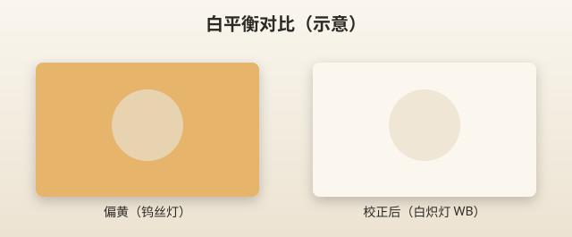
📷 建议图片：AUTO vs 白炽灯 WB 餐厅对比。
第一个月：AUTO WB + 曝光补偿 解决 90%。
为什么夜景噪点很多？
| 原因 |
解决 |
| ISO 太高（6400+） |
上限改 3200；或接受 3200 |
| 强行提亮 JPEG |
曝光时 +EV，别后期拉 |
| 长曝光降噪关 |
默认标准即可 |
| 和手机比 |
手机多帧降噪，相机单帧更「真实」 |
改善：
- 三脚架 → ISO 200 + 慢门
- 手持 → F4 + ISO 1600～3200，别 F8
为什么自动对焦失败？
| 现象 |
原因 |
解决 |
| 拉风箱 |
太暗、低对比 |
对亮处；辅助 AF 灯 |
| 一直糊 |
最近距离内 |
14-42 退到 20cm 外 |
| 对不上 |
玻璃/栅栏 |
开大光圈无效，换角度 |
| 人脸错 |
多人 |
改单点手动选对 |
| 视频 AF 慢 |
反差 AF 特性 |
单次对焦后开拍 |
低光 AF 技巧：对路灯、橱窗，半按锁定， recompose。
为什么曝光不正常？
| 现象 |
原因 |
解决 |
| 脸黑背景亮 |
逆光 |
+0.7～+1.0 EV 或 HDR |
| 天空一片白 |
过曝 |
-0.3～-0.7 EV |
| 整体偏暗 |
相机保守 |
+0.3 EV |
| 闪烁条纹 |
荧光灯 |
防闪烁 AUTO |
| 夜景过曝 |
SCN 误判 |
改 A 手动控 |
A 模式：前拨轮改曝光补偿是最快手段。
为什么照片比手机差？
| 手机优势 |
相机要补的课 |
| 计算摄影 HDR |
曝光补偿、SCN HDR |
| 人像模式算法虚化 |
物理虚化技巧 |
| 自动分享优化 |
机内 Profile / ART |
| 随时在口袋 |
你愿意带 EP7 吗？ |
真实差距：光学变焦（40-150）、暗光细节、打印放大——学会设置后会反超。
检查清单：
- [ ] 是否 LF 画质？
- [ ] 是否对焦准确？
- [ ] 是否用了 A 而非 iAUTO 乱闪？
- [ ] 是否和大太阳下看不清屏幕有关？
为什么人物脸发黑？
| 场景 |
解决 |
| 逆光 |
+1.0 EV；SCN 逆光 HDR |
| 帽子阴影 |
让人脸转向光 |
| 背景太亮 ESP 测光 |
点测光人脸或 +EV |
| 闪光未开 |
室内强制闪光 -1EV |
为什么屏幕看不清？
EP7 无取景器，强光下常见问题。
| 方法 |
说明 |
| 找阴影 |
最实用 |
| 手挡屏幕上方 |
临时遮光罩 |
| 调高亮度 |
MENU 显示设置 |
| 翻转角度 |
减少反光 |
| 戴偏光墨镜 |
会看不清——摘墨镜 |
不是故障，是设计取舍。
为什么镜头伸不出来 / 缩不回去？
| 情况 |
说明 |
| 14-42 EZ 开机不伸 |
检查镜头是否锁紧；换电池 |
| 关机缩回 |
正常 |
| 卡住 |
关机，轻助转动，勿蛮力 |
| 40-150 无伸缩 |
正常，机械变焦手动拧 |
为什么 SD 卡报错？
| 原因 |
解决 |
| 新卡未格式化 |
MENU 格式化 |
| 卡速不够拍 4K |
换 U3 / UHS-II |
| 卡满 |
删除或换卡 |
| 卡接触不良 |
重新插入 |
| 假卡 |
正品渠道买 |
为什么 Wi-Fi 连不上手机？
| 步骤 |
操作 |
| 1 |
手机装 OI.Share 或 OM Image Share |
| 2 |
相机 MENU → Wi-Fi → 简单连接 / QR |
| 3 |
关闭相机省电立即断连 |
| 4 |
传图时停止 USB 充电冲突 |
第一个月可以不学 Wi-Fi，数据线或读卡器复制。
为什么闪光灯不弹 / 不闪？
| 原因 |
解决 |
| 闪光模式关 |
SCP 改自动或强制开 |
| iAUTO 白天不需要 |
正常 |
| 充电中 |
某些操作限制 |
| 手动压回 |
按闪光按钮弹出 |
为什么连拍很慢 / 停拍？
| 原因 |
说明 |
| SD 卡慢 |
换 UHS-I U3 以上 |
| 缓冲满 |
等写入完成 |
| 用 Silent 连拍 |
速度不同 |
| 4K 视频发热 |
休息再拍 |
为什么照片有污点 / 黑点在固定位置？
传感器进灰。换镜头时关机、镜头朝下、快换。
- 小光圈 F16 拍天空可见污点——日常 F5.6 不明显
- MENU → 像素映射（官方建议流程）
- 严重 → 清洁服务
为什么 ART 滤镜拍完无法变回普通？
ART 模式 JPEG 带滤镜，非 RAW 无法撤销。
解决：重要场合用 A 模式；ART 当创意副本。
为什么 4K 视频抖？
| 原因 |
解决 |
| 视频防抖有限 |
1080p + 广角 14mm |
| 手持长焦 |
别用 150mm 拍视频 |
| 走路拍摄 |
稳定器或三脚架 |
拍照防抖 ≠ 视频防抖同样强。
快速诊断流程图
照片不满意
│
├─ 模糊？ → 看快门 → 提 ISO / 开大光圈 / 三脚架
│
├─ 太暗/太亮？ → 曝光补偿 ±
│
├─ 颜色怪？ → WB AUTO / ±EV
│
├─ 对不上焦？ → 单点对主体 / 够亮
│
└─ 和手机比？ → 检查设置 + 光学变焦场景
何时该找售后？
- 新镜/new 机镜头异响异常大
- 传感器明显划痕
- 充电灯狂闪无法充进
- 按键无反应（重启无效）
- 严重偏色所有设置无效
实战 walkthrough：照片不满意「5 分钟自检」（分步）
拍完觉得不对劲，别瞎猜。按这套流程走一遍，90% 问题当场定位。
第 1 步｜回放 + 按 INFO 看参数
→ 记下快门、光圈、ISO
第 2 步｜判「糊」还是「脏」还是「暗」
· 糊 → 看快门：<1/60 且手持？→ 手抖，提 ISO/开光圈/找支撑
· 脏(噪点) → 看 ISO：>3200？→ 压 ISO 上限、别硬提亮
· 暗/亮 → 曝光补偿：暗+0.3~1，亮-0.3~0.7
第 3 步｜判对焦
→ 放大主体：清吗？主体虚背景清=对错地方
→ 改单点，压在主体（人像=眼睛）重拍
第 4 步｜判颜色
→ 偏黄/偏蓝？→ WB 一般 AUTO 够；极端光源手动选
第 5 步｜复拍验证
→ 按上面结论改 1 个参数，重拍同一场景对比
三个真实案例（照着诊断）
案例 1：室内孩子照片全糊
EXIF：F8, 1/15, ISO 400
诊断：F8 太小→快门被拖到 1/15→手抖+孩子动
处方：改 F4，ISO 上限放 3200，快门升到 1/200，H 连拍
案例 2：逆光人脸黑
EXIF：F5.6, 1/500, 0EV，背后是窗
诊断：ESP 测光被亮背景骗，脸欠曝
处方：曝光补偿 +1.0，或 SCN 逆光 HDR，或闪光 -1EV 补脸
案例 3：夜景噪点多且发灰
EXIF：F8, 1/8, ISO 6400，事后又拉亮
诊断：ISO 过高 + 后期硬提亮
处方：F3.5 全开、ISO 回 3200、拍时 +EV 一次到位；有三脚架就 ISO200 慢门
🎯 养成习惯：每次不满意都先看 EXIF 再改一个参数复拍。改一个变量才知道是什么在起作用。
本章重点回顾
- 糊片第一查 快门速度
- 背景不虚 → F4 + 长焦 + 靠近
- 脸黑 → 逆光 +EV
- 噪点 → 控 ISO 3200 + 三脚架夜景
- 比手机差 → 多半是 设置和场景 不是相机差
常见误区
| 误区 |
真相 |
| 糊了就是相机坏 |
90% 快门或对焦 |
| 噪点是 EP7 不行 |
ISO 6400 任何小传感器都脏 |
| 手机永远更好 |
各擅长不同场景 |
| 屏幕看不清要维修 |
无 EVF 的常态 |
拍摄练习
- 故意糊片：1/10 秒 handheld 1 张，再 1/250 1 张对比
- 虚化对比：14 F3.5 vs 150 F5.6 同背景
- 逆光 +0 / +1.0 人脸亮度对比
- ISO 3200 vs 6400 夜景噪点对比
- 建立个人「问题日志」：记录 5 次失败及原因
全书完结
恭喜你读完《从零开始使用 EP7》。
记住三条：
- 日常 A 模式 + F5.6 + ISO AUTO
- 14-42 挂机，要拉近换 40-150
- 糊了看快门，暗了加 EV，虚了换焦段
继续拍，比继续读更重要。
想继续进阶？
基础篇到此结束。当你用熟 A 模式后，可以进入进阶篇：
回到 README.md 查看学习路线。
RAW 后期入门
本章目标：当你对 JPEG 直出不再满足时，用最小的学习成本迈入 RAW + 后期。新手第一个月可以跳过本章。
先问自己：你需要 RAW 吗？
| 你的情况 |
建议 |
| 刚上手，追求「拍清楚、直出好看」 |
先别碰 RAW，用 LF JPEG |
| 经常遇到「天空死白」「暗部死黑」救不回来 |
可以开始学 RAW |
| 想要自己的统一风格 / 调色 |
学 RAW |
| 拍逆光、夜景、婚礼等高反差场景 |
强烈建议 RAW |
| 手机/电脑存储紧张、不想后期 |
继续 JPEG |
一句话：RAW 是「底片」，JPEG 是「冲印好的照片」。RAW 保留更多信息，但必须自己「冲洗」。
RAW 与 JPEG 的本质区别
| 对比项 |
JPEG（LF） |
RAW（ORF） |
| 本质 |
相机已处理好的成品 |
传感器原始数据 |
| 白平衡 |
拍摄时锁定 |
后期随意改，无损 |
| 曝光宽容度 |
高光/暗部易死 |
可找回约 ±1～2 档 |
| 文件大小 |
约 8～10MB |
约 20MB |
| 后期空间 |
小，调多了发灰崩坏 |
大 |
| 直接分享 |
手机电脑都能看 |
需转换 |
| 相机内滤镜/Profile |
已烘焙进画面 |
仅作预览，可改 |
EP7 的 RAW 文件后缀是 .ORF（Olympus RAW Format）。
在 EP7 上开启 RAW
路径：MENU → 相机图标 → 图片质量
| 选项 |
说明 |
推荐 |
| LF |
仅大 JPEG |
纯直出 |
| RAW |
仅 RAW |
存储紧张的进阶者 |
| RAW+LF |
两个都存 |
⭐ 过渡期最稳 |
💡 建议：刚学 RAW 时用 RAW+LF。JPEG 用来快速分享和对照，RAW 用来练后期。习惯后再决定是否只留 RAW。
⚠️ 存储提醒：RAW+LF 单张约 28～30MB，64GB 卡约拍 2000 张。多带一张卡。
后期软件怎么选
| 软件 |
平台 |
价格 |
适合 |
| OM Workspace |
Win/Mac |
免费 |
OM/奥林巴斯官方，完美支持 ORF、可套用机内色彩 |
| Lightroom |
Win/Mac/移动 |
订阅 |
行业标准，管理 + 调色一体 |
| darktable |
Win/Mac/Linux |
免费开源 |
Lightroom 的免费替代 |
| 手机 Snapseed |
iOS/Android |
免费 |
轻度修 JPEG，不推荐修 RAW |
| Capture One |
Win/Mac |
较贵 |
专业色彩，进阶 |
新手首选：OM Workspace（免费、官方、能还原机内色彩配置）。想要更强管理再上 Lightroom。
RAW 后期基础流程（5 步）
以 Lightroom / OM Workspace 通用逻辑为例：
1. 导入并挑片（删废片、标星）
2. 定基调：白平衡 + 曝光
3. 找回细节：高光 / 阴影 / 白色 / 黑色
4. 加质感：对比度、清晰度、饱和/自然饱和度
5. 局部与收尾：裁剪、镜头校正、降噪锐化、导出
第 1 步：挑片
- 一次拍摄先删掉明显糊片、闭眼、重复
- 给满意的打 ⭐，只修有价值的（后期很费时间）
第 2 步：白平衡 + 曝光（RAW 最大优势）
| 滑块 |
作用 |
新手方向 |
| 色温 |
冷暖 |
偏黄拉蓝、偏蓝拉黄，或用吸管点白色物体 |
| 色调 |
绿/品红 |
微调，一般不大动 |
| 曝光 |
整体明暗 |
欠曝 +，过曝 - |
RAW 改白平衡是完全无损的——这是 JPEG 做不到的最大好处。
第 3 步：找回高光与暗部
高反差场景（逆光、日落、窗边）的救命四滑块：
| 滑块 |
什么时候拉 |
| 高光 Highlights |
天空/亮部太亮 → 往左（负） |
| 阴影 Shadows |
暗部死黑看不清 → 往右（正） |
| 白色 Whites |
定义最亮点 |
| 黑色 Blacks |
定义最暗点，避免发灰 |
典型逆光人像：高光 -40、阴影 +50，脸和天空同时有细节。
第 4 步：加质感
| 滑块 |
效果 |
注意 |
| 对比度 |
通透 |
别过头显假 |
| 清晰度 Clarity |
中间调锐利 |
人像少用（显毛孔） |
| 自然饱和度 Vibrance |
智能提色 |
⭐ 优先用它 |
| 饱和度 Saturation |
全局提色 |
容易过艳 |
人像慎用清晰度和高饱和；风景可稍多。
第 5 步：收尾导出
- 裁剪：二次构图、拉正地平线
- 镜头校正：勾选自动，修畸变/暗角（14mm 尤其有用）
- 降噪：高 ISO 夜景往上拉「明亮度降噪」
- 锐化：适度，导出给屏幕看约 +40
- 导出：JPEG、sRGB、长边 2048～4096px 分享足够
EP7 专属：把机内色彩带进后期
OM Workspace 能读取拍摄时的 色彩 Profile / 艺术滤镜 作为起点：
- 你喜欢机内某个直出风格，却想微调曝光 → RAW + OM Workspace 完美解决
- 相当于「先要直出的色，再要 RAW 的宽容度」
这是用官方软件修 OM 相机 RAW 的独特优势。
常见场景后期方向
| 场景 |
后期重点 |
| 逆光人像 |
阴影 +、高光 -、色温微暖、磨皮轻 |
| 日落风景 |
高光 -、自然饱和度 +、色温偏暖 |
| 城市夜景 |
阴影 +、明亮度降噪、清晰度小 + |
| 室内美食 |
白平衡校准、曝光 +、自然饱和度 + |
| 阴天风景 |
对比度 +、色温微暖、去灰 |
常见错误
| 错误 |
后果 |
解决 |
| 拍时就欠曝很多，想后期拉回 |
暗部噪点爆炸 |
拍摄尽量曝光准确，RAW 不是万能 |
| 饱和度拉满 |
颜色假、断层 |
用自然饱和度，克制 |
| 每张都重度修 |
耗时、风格乱 |
建预设/风格，批量套用 |
| 只存 RAW 手机看不了 |
分享麻烦 |
过渡期用 RAW+LF |
| 清晰度全局拉高 |
人像显毛孔、噪点放大 |
局部用，或人像少用 |
本章重点回顾
- RAW = 底片，宽容度高，但要自己「冲洗」
- 新手过渡期用 RAW+LF，习惯后再定
- 后期软件首选免费 OM Workspace，进阶上 Lightroom
- 核心流程：白平衡 → 曝光 → 高光/阴影 → 质感 → 导出
- RAW 最大好处：无损改白平衡 + 找回高光暗部
常见误区
| 误区 |
真相 |
| RAW 一定比 JPEG 好看 |
未经后期的 RAW 往往更「灰、平」 |
| 有 RAW 就能救一切 |
严重欠曝/糊片仍救不回 |
| 后期是「作弊」 |
后期是摄影完整流程的一部分 |
| 必须用付费软件 |
OM Workspace / darktable 免费够用 |
练习
- 同一逆光场景拍 RAW+LF，对比：JPEG 直出 vs RAW 拉回高光暗部
- 用吸管工具校准一张暖光餐厅照片的白平衡
- 挑 5 张 RAW，只用「曝光 + 高光 + 阴影 + 自然饱和度」四项修完
- 建立 1 个你自己的预设，批量套用到 10 张同场景照片
- 导出对比：sRGB JPEG 2048px vs 原图，看分享是否够用
相关：03-第一次开机设置.md（画质设置） | 12-常见问题.md（颜色/曝光问题）
视频与 Vlog 实操
本章目标：用 EP7 拍出稳定、清晰、声音够用的日常视频和 Vlog——并诚实告诉你它的短板。
先认清 EP7 的视频定位
EP7 是照片优先的相机，视频是「够用但不专业」：
| 能力 |
说明 |
| 4K 30p |
有，但有裁切、无强力防抖协同 |
| 1080p 60p |
⭐ 日常 Vlog 主力，流畅稳定 |
| 机身防抖 |
拍照很强，视频明显减弱 |
| 麦克风 |
仅机内立体声，无 3.5mm 外接口 |
| 耳机监听 |
无 |
| 翻转屏 |
可下翻自拍，方便 Vlog |
| 对焦 |
反差 AF，视频追焦一般 |
一句话：日常记录、旅行 Vlog、口播——够用；商业视频、剧烈运动、专业收音——不合适。
视频基础设置
路径：模式转盘 → 视频（摄像机图标）→ MENU 视频菜单
| 设置 |
新手推荐 |
说明 |
| 分辨率/帧率 |
1080p 60fps |
流畅、防抖裁切小、文件适中 |
| 4K |
30p（需要时） |
画质高但裁切大、文件大、发热 |
| 视频防抖 (IS) |
开（M-IS 1） |
手持必开 |
| 对焦模式 |
C-AF |
视频建议连续对焦 |
| 图片模式/Profile |
自然 或 标准 |
别用高对比，后期空间大 |
| 曝光 |
A 或 P，或手动 |
想控景深用 A |
💡 帧率怎么选：日常/口播 30fps 够；想要顺滑或轻微慢动作用 60fps。
曝光与快门：视频的关键规则
拍视频有一条和拍照不同的核心规则：
视频快门速度 ≈ 帧率 × 2
30fps → 1/60 秒
60fps → 1/125 秒
为什么？ 快门太快视频会「顿」（缺少自然运动模糊），太慢会拖影。
| 场景 |
帧率 |
快门 |
| 日常口播 |
30fps |
1/50～1/60 |
| 走路 Vlog |
60fps |
1/125 |
| 强光下开大光圈 |
任意 |
需要 ND 滤镜 压光 |
白天想用大光圈虚化背景，但快门被规则限制 → 加 ND 减光镜（进阶）。
稳定：EP7 视频防抖有限，怎么办
拍照防抖 ≠ 视频防抖同样强。手持视频会「果冻」和飘。
| 方法 |
效果 |
成本 |
| 开机内视频防抖 M-IS |
基础 |
免费 |
| 用 14mm 广角端 |
广角抖动更不明显 |
免费 |
| 双手夹紧 + 屏息移动 |
明显改善 |
免费 |
| 走路用「猫步」（膝盖微屈滑步） |
减少上下颠 |
免费 |
| 小型三脚架 / 桌面架 |
固定机位口播稳 |
便宜 |
| 手持稳定器（gimbal） |
电影感移动 |
较贵 |
别用 40-150 长焦拍手持视频——放大抖动，几乎必果冻。
声音：没有外接口怎么救
EP7 只有机内立体声麦，收音一般且会收环境噪。
| 场景 |
方案 |
| 安静室内口播 |
机内麦 + 靠近相机说话 |
| 户外/有风 |
机内麦会呼呼响，尽量背风 |
| 想要好声音 |
用手机/录音笔单独录音，后期对轨 |
| 严肃 Vlog |
相机拍画面 + 领夹麦录到手机，剪辑合并 |
EP7 无麦克风接口是硬伤。追求人声清晰，双系统录音（相机画面 + 手机声音） 是最实惠的解法。
Vlog 自拍设置
EP7 屏幕可下翻，适合对着自己拍：
模式：视频
分辨率：1080p 30 或 60fps
镜头：14-42 @ 14mm（等效 28mm，手臂长度能入镜）
对焦：C-AF + 人脸检测
防抖：M-IS 开
光圈：F4～F5.6（自拍别太浅景深，容易脱焦）
⚠️ 下翻屏时若装了大镜头或三脚架，可能挡屏——用小架或桌面支架。
常见拍摄场景配方
固定口播 / 教程
三脚架固定，1080p 30fps
14-42 @ 25mm，距离 1～1.5m
C-AF + 人脸检测
窗边侧光或补光灯
声音：靠近 + 安静环境，或外录
旅行走动 Vlog
1080p 60fps
14mm 广角，M-IS 开
猫步移动，转身用身体带动而非甩手
多拍空镜（风景、细节、脚步）方便剪辑
B-roll 空镜（提升质感）
1080p 或 4K
慢速平移、推拉、固定几秒
光圈 F4 浅景深拍局部细节
每个镜头拍 5～10 秒，剪辑时好用
慢动作
高速模式（帧率高，无声音）
后期放慢，适合流水、奔跑、飘动
注意需要更快快门和更亮光线
剪辑：最简工作流
| 环节 |
工具建议 |
| 手机快剪 |
剪映、CapCut |
| 电脑入门 |
剪映专业版、DaVinci Resolve（免费） |
| 音画对轨 |
拍摄时拍一下手/打板，方便对齐 |
| 导出 |
1080p H.264，分享平台通用 |
剪辑基本节奏：开头 3 秒抓人 → 主体内容 → 空镜过渡 → 结尾。
电池与发热
| 问题 |
说明 |
应对 |
| 4K 发热 |
长时间可能提示过热 |
分段拍、间歇休息 |
| 视频耗电快 |
比拍照费电 |
备用电池、边充边拍（USB） |
| 卡速不够 |
4K 需 U3 |
用 UHS-I U3 以上 |
本章重点回顾
- 日常 Vlog 主力：1080p 60fps + M-IS 防抖 + 14mm 广角
- 快门守则：帧率 ×2（30fps→1/60，60fps→1/125）
- 稳定靠：广角 + 猫步 + 三脚架/稳定器
- 声音硬伤：无外接口，认真做就手机外录对轨
- 4K 有裁切和发热，非必要用 1080p
常见误区
| 误区 |
真相 |
| 拍照防抖强，视频也一样稳 |
视频防抖弱很多 |
| 4K 一定比 1080p 好 |
裁切、发热、文件大，日常 1080p 更实用 |
| 快门越快视频越清晰 |
太快会「顿」，要遵守帧率×2 |
| 机内麦够专业用 |
环境噪大，重要人声要外录 |
| 长焦也能手持拍视频 |
长焦手持视频几乎必果冻 |
练习
- 同一段走路：14mm vs 42mm 对比抖动差异
- 固定口播 30 秒：测试机内麦在安静 vs 有风环境的收音
- 拍 5 个 B-roll 空镜（各 8 秒），尝试剪成 20 秒短片
- 30fps 1/60 vs 30fps 1/500 对比运动流畅度
- 手机外录人声 + 相机画面，练一次音画对轨
相关：04-模式转盘.md（视频模式） | 05-14-42EZ镜头.md（广角自拍） | 11-菜单详解.md（视频菜单）
旅行摄影全流程
本章目标：把 EP7 双镜头套装用在一次真实旅行里——从行前打包到当天拍摄，再到回家整理。
为什么 EP7 是理想的旅行机
| 优势 |
对旅行的意义 |
| 轻（机身约 337g） |
挂脖一天不累 |
| 双镜头覆盖 28～300mm |
一机走天下，广角到长焦全包 |
| 防抖强 |
教堂、博物馆等暗处手持可拍 |
| 直出好看 |
旅途随手发圈不用后期 |
| USB 充电 |
充电宝就能续命 |
短板也要认：无取景器（强光屏幕难看清）、不防雨、长焦暗光弱。
行前打包清单
必带
□ EP7 机身 + 14-42 EZ（挂机）
□ 40-150 R（放包侧袋）
□ 满电电池 + 至少 1 块备用
□ 充电器 + USB 线（或充电宝）
□ 主 SD 卡（64GB+）+ 备用卡
□ 气吹 + 镜头布
□ 肩带（装好）
按目的地增减
| 目的地类型 |
加带 |
| 海岛/沙滩 |
密封袋防沙、镜头布多带 |
| 雪山/极寒 |
电池贴身保暖、多带备用电 |
| 城市夜景 |
小型三脚架 |
| 雨林/多雨 |
相机雨衣/塑料袋、干燥剂 |
| 长途多天 |
读卡器、移动硬盘/云备份 |
💡 过安检：电池随身不托运；镜头、机身放防震隔层。
出发前相机预设
用 07-第一次出去拍照.md 的标准配置，再针对旅行微调：
模式：A
光圈：F5.6（合影 F8）
ISO：AUTO 上限 3200
画质：LF 或 RAW+LF（想后期）
对焦：S-AF 单点 + 人脸检测
防抖：S-IS AUTO
网格线：3×3 开
水平仪：开（拍建筑/海平面）
镜头：14-42 挂机
想认真修图选 RAW+LF，随手发圈选 LF。
一天旅行的镜头与参数节奏
| 时段 |
场景 |
镜头/参数 |
| 清晨 |
街道、早餐、晨光 |
14-42 @ 14～25mm, F5.6 |
| 上午 |
地标合影、广场 |
14-42 @ 14mm, F8 |
| 中午 |
远处山/塔/对岸 |
换 40-150 @ 100～150mm, F5.6 |
| 午后 |
美食、咖啡馆 |
14-42 @ 25mm, F5.6, +0.3EV |
| 黄昏 |
日落、剪影 |
14-42 @ 14mm, F8, -0.3EV |
| 夜晚 |
夜景、灯光 |
14-42 @ 17mm, F4, ISO≤3200 |
旅行常见题材配方
地标 + 人（到此一游升级版）
14-42 @ 14mm, A, F8
人物放三分线，别死站正中
蹲低一点让人显高、地标更雄伟
对焦人物，景深覆盖背景
街头人文
14-42 @ 25mm（融入）或 40-150 @ 80mm（远距离低调）
A, F5.6, 快门≥1/250
预对焦 + 抓表情/动作瞬间
风光大场景
14-42 @ 14mm, A, F8, ISO 200
前景（石头/花/人）+ 中景 + 远景，制造层次
地平线用水平仪拉平，别放正中（放上/下三分线）
长焦压缩（旅行大片感）
40-150 @ 100～150mm, A, F5.6
拍层叠的山、密集的屋顶、远处的塔
长焦「压缩」让元素叠在一起，更有张力
美食与细节
14-42 @ 25mm, A, F5.6, +0.3～+0.7EV
45° 或俯拍，靠窗自然光最佳
拍局部细节（纹理、手部动作）丰富故事
应对旅行难题
| 难题 |
解法 |
| 大太阳看不清屏幕 |
找阴影构图、手遮屏幕、调高亮度 |
| 景点人太多 |
长焦压缩避开人群，或等空隙、用低角度 |
| 室内禁闪光 |
SCN 静音 / 提 ISO + 防抖手持 |
| 逆光剪影 vs 补脸 |
要脸 +1.0EV，要剪影 -1.0EV，各拍一张 |
| 换镜头怕进灰 |
背风、机身朝下、快速换；风沙大就不换 |
| 电量告急 |
关屏省电、降回放、充电宝随充 |
存储与备份（旅途别丢照片）
EP7 是单卡槽——卡坏 = 全丢。旅行务必养成备份习惯：
每天回酒店：
1. 照片导入手机（Wi-Fi / 读卡器）或笔电
2. 上传一份到云盘（重要的）
3. 卡快满 → 换备用卡，别现场删原图
⚠️ 不要在相机里边看边删重要照片——回家大屏再筛。
一次「拍摄故事线」思维
旅行照片好看的关键不是单张，而是能讲一个故事：
到达（车站/机场/招牌）
→ 环境（街道全景）
→ 细节（食物、招牌、手作）
→ 人物（同行者、当地人）
→ 高潮（地标/日落大片）
→ 结束（夜晚灯光/离开）
每个环节拍几张，回家就能排成一条完整游记。
回家整理流程
- 全部导入电脑，按日期/地点建文件夹
- 第一轮：删糊片、闭眼、重复
- 第二轮：每个场景选 1～3 张精修
- RAW 的按 13-RAW后期入门.md 调色
- 挑 20～30 张排成游记，其余归档
- 备份两处（本地 + 云）
本章重点回顾
- EP7 轻 + 双镜头 28～300mm = 理想旅行机
- 打包：机身 + 双镜头 + 备用电 + 备用卡 + 清洁
- 一天按光线节奏换镜头：广角合影、长焦远景、黄昏负补偿
- 单卡槽务必每天备份
- 用「故事线」思维成组拍摄，回家能排游记
常见误区
| 误区 |
真相 |
| 带越多器材越好 |
双镜头足够，越轻越愿意拍 |
| 只拍地标大景 |
细节和人物才让游记有温度 |
| 到此一游站正中 |
三分构图 + 低角度更好看 |
| 现场边拍边删 |
小屏易误删，回家大屏筛 |
| 一张卡走天下 |
单卡槽风险高，备卡 + 每天备份 |
练习
- 出发前按清单打包并拍照记录（防漏带）
- 同一地标：14mm 环境 vs 150mm 局部 各拍一张
- 用「故事线」在一个下午拍满 6 个环节
- 黄昏拍日落：+1.0EV 补脸 vs -1.0EV 剪影 对比
- 回家完整走一遍整理+备份流程
相关：06-40-150R镜头.md | 09-拍风景.md | 10-夜景.md | 13-RAW后期入门.md
摄影术语表
本章目标：一页看懂全书出现的所有名词。看到不懂的词，回这里查。按主题分组，附「人话解释」。
曝光三要素
| 术语 |
英文/缩写 |
人话解释 |
记忆点 |
| 光圈 |
Aperture / F 值 |
镜头进光孔大小 |
F 数字越小孔越大、进光越多、背景越虚 |
| 快门速度 |
Shutter Speed |
感光时间长短 |
越快越能凝固运动，越慢越亮但易糊 |
| 感光度 |
ISO |
传感器对光的敏感度 |
越高越亮但噪点越多 |
| 曝光 |
Exposure |
照片整体明暗 |
三要素共同决定 |
| 曝光补偿 |
EV / Exposure Comp. |
在自动基础上手动调亮/暗 |
+变亮，-变暗 |
| 测光 |
Metering |
相机判断该多亮 |
ESP 默认够用 |
三者关系：一个变了，另外的要补偿才能维持同样亮度——这叫互易。
对焦相关
| 术语 |
缩写 |
解释 |
| 单次自动对焦 |
S-AF |
半按对焦一次锁定，拍静物人像 |
| 连续自动对焦 |
C-AF |
持续追焦，拍运动/宠物 |
| 手动对焦 |
MF |
自己拧对焦，微距/星空 |
| 对焦峰值 |
Peaking |
MF 时高亮已合焦边缘 |
| 人脸/眼部检测 |
Face/Eye AF |
自动找人脸/眼睛对焦 |
| 单点对焦 |
Single Point |
一个小框，最精准 |
| 追踪对焦 |
C-AF+TR |
锁定主体并跟随 |
| 拉风箱 |
Hunting |
对不上焦来回伸缩，多因太暗/低反差 |
镜头相关
| 术语 |
解释 |
| 焦距 |
镜头 mm 数，决定视角（小=广、大=远） |
| 等效焦距 |
换算成全画幅视角；M4/3 = 实际 ×2 |
| 变焦镜头 |
焦距可变（如 14-42） |
| 定焦镜头 |
焦距固定，通常光圈更大更锐 |
| 电动变焦 |
EZ，电子控制伸缩（14-42 EZ） |
| 饼干头 |
Pancake，很薄的镜头 |
| 最近对焦距离 |
能合焦的最近距离，比它近就对不上 |
| 遮光罩 |
挡杂光、防眩光的罩子 |
| 滤镜口径 |
镜头前端螺纹直径（如 37mm、58mm） |
传感器与系统
| 术语 |
解释 |
| M4/3 / Micro Four Thirds |
EP7 用的传感器与卡口标准，等效系数 2× |
| 全画幅 |
更大的传感器，景深更浅、暗光更好、更重更贵 |
| APS-C |
介于 M4/3 和全画幅之间 |
| 像素 |
画面细节数量，EP7 约 2000 万 |
| 无反相机 |
无反光镜，比单反轻小（EP7 属此类） |
| 五轴防抖 |
IBIS，机身内稳定，手持更稳 |
| 传感器除尘 |
开机振动抖掉灰尘 |
画质与文件
| 术语 |
解释 |
| JPEG |
相机处理好的成品图，通用易分享 |
| LF |
Large Fine，大尺寸高质量 JPEG（新手默认） |
| RAW / ORF |
原始数据「底片」，后期空间大（EP7 为 .ORF） |
| 白平衡 |
WB，校正光线偏色，让白色是白 |
| 色温 |
光的冷暖，单位开尔文 K |
| 动态范围 |
同一张里最亮到最暗的记录能力 |
| 噪点 |
高 ISO/暗光下的杂色颗粒 |
| 直方图 |
显示明暗分布的图表 |
| 高光/阴影 |
画面的亮部/暗部 |
构图与用光
| 术语 |
解释 |
| 三分法 |
主体放九宫格线交点，更耐看 |
| 景深 |
画面中清晰的前后范围（浅=背景虚，深=都清晰） |
| 虚化 / 散景 |
Bokeh，背景模糊的效果 |
| 黄金时刻 |
日出后/日落前 1 小时，光线最美 |
| 逆光 |
光从主体背后来，易剪影 |
| 顺光 |
光从拍摄者方向照主体 |
| 侧光 |
从侧面来，立体感强 |
| 剪影 |
主体全黑只剩轮廓 |
| 压缩感 |
长焦让远近元素「叠」在一起 |
| 畸变 |
广角边缘变形（拉伸/弯曲） |
模式与功能
| 术语 |
解释 |
| iAUTO |
全自动，相机全权决定 |
| P / A / S / M |
程序 / 光圈优先 / 快门优先 / 全手动 |
| SCN |
场景模式，预设参数 |
| ART |
艺术滤镜，机内创意效果 |
| AP |
高级拍摄模式（Live Composite 等） |
| B 门 / BULB |
长时间曝光，按住多久曝多久 |
| Live Composite |
实时叠加光轨，背景不过曝（烟花/星轨） |
| HDR |
合成多张，扩展动态范围 |
| 包围曝光 |
Bracketing，连拍不同曝光 |
| SCP |
超级控制面板，按 OK 调出的快捷设置 |
| 连拍 |
H/L，一次多张（运动、儿童） |
视频相关
| 术语 |
解释 |
| 帧率 fps |
每秒画面数，30/60 常用 |
| 4K / 1080p |
分辨率高低 |
| B-roll |
空镜/辅助镜头，剪辑过渡用 |
| M-IS |
视频电子+机身防抖 |
| ND 滤镜 |
减光镜，强光下开大光圈用 |
| 果冻效应 |
手持视频晃动导致的扭曲 |
| 猫步 |
拍视频时膝盖微屈滑步走，减颠簸 |
常见缩写速查
| 缩写 |
全称 |
中文 |
| EV |
Exposure Value |
曝光值/补偿 |
| WB |
White Balance |
白平衡 |
| AF / MF |
Auto/Manual Focus |
自动/手动对焦 |
| IS / IBIS |
Image Stabilization |
防抖 |
| ISO |
— |
感光度 |
| EXIF |
— |
照片拍摄参数信息 |
| EVF |
Electronic Viewfinder |
电子取景器（EP7 无） |
| SCP |
Super Control Panel |
超级控制面板 |
| ORF |
Olympus RAW Format |
奥林巴斯 RAW 格式 |
| M4/3 |
Micro Four Thirds |
微 4/3 系统 |
记住这几个就够开始
新手最先要理解的 5 个词：
- 光圈（F 值）——控背景虚化
- 快门速度——控糊不糊
- ISO——控亮度与噪点
- 曝光补偿（EV）——一键调亮/暗
- 对焦（S-AF/单点）——对准主体
其余的用到再回来查即可。
相关：全书各章。曝光详解见 04-模式转盘.md，问题排查见 12-常见问题.md。